Slide Contact Geometry V1.2
Touchline · branch prototype/slide-contact-v1.2 (worktree FC Simulator worktrees/slide-contact-v1.2) · built on baseline/tackled-player-v1 (f5f6076) · frozen controls baseline/outfield-runtime-v1, baseline/possession-v1.1-handoff, baseline/tackled-player-v1 untouched · local only, nothing pushed
http://127.0.0.1:8124/sandbox/visual/match.html?ofPlay=1&fps=60&squad=D7 (serve this worktree). Shift+G runs the side-on slide demo, which plays every case below back to back (Shift+H next, - 0.25×). F slides along the stick while you hold a direction; the HUD's slide V1.2 lines show the technique, the ball contact and the contact history.Follow-up — body interaction on cross-line slides
What measurement showed (each fixed at its cause)
- The simulation did not know where the V1.2 body was. The V1.2 alignment moved the rendered slider onto his tackling hip, so seat, trunk and the tucked leg lie 13–20 cm toward the tucked side (toward the attacker). The simulation's capsules were still where the V1 pose had them. In the two worst cases the simulated capsules were 1–23 cm apart while the rendered bodies overlapped by up to 22 cm. The capsules are now re-measured from the rendered V1.2 pose: seat, reclined trunk, the tucked thigh, and its shin folded back under the seat.
- Once a contact was resolved, nothing kept the bodies apart. An "absorbed" or "resting" contact changed nothing, and the tackler's only response was losing the impulse from his speed. Now, while a slide is in contact with a player on his feet, a bounded non-penetration constraint acts on every rigid body-to-body pair (his seat / trunk / tucked leg against the player's pelvis, trunk, thighs or a weight-bearing leg). It removes the closing velocity along the contact normal plus a separating bias, shared by the players' recorded masses. The slider loses speed and is deflected sideways; the player is pushed on top of his reaction's steps. It uses velocities only. The sweeping leg against legs, and anything against a swinging limb, stays with the impulse / reaction model (sweep, trip, step-over), because that is the tackle itself.
- The contact window ended when the slider stopped. A player still on his feet (in his failing steps) then walked through the slider lying on the pitch. The window now lasts until the slider's get-up. A stopped slider can't be pushed (ground friction), so the player takes the whole correction.
- A planted foot under the slider's seat cannot be pushed out, because it is planted: moving his body doesn't move it. Held there (more than 4 cm for 3 ticks), any rigid part of him trapped on the slider's body is an OVERRUN. That contact is re-resolved through the same balance law with the support lost, and normally he goes over the slider.
- A deeply penetrated closest-point normal can point the wrong way. A foot already under the seat was being driven further through. The separating direction is now from the slider's body axis to the player.
- Falling over the slider. While he is in the air, his body is modelled as the fall presentation carries it: pelvis over his root, head going where his head goes, legs trailing. The slider is stopped against him and he is steered off it with a separating push. When his trunk topples into the slider's upper body, the fall rotates around it (bounded turn rate); the presentation's directional fall basis follows.
- Two presentation defects the measurement exposed. A faller was laid on a slider who was getting up, so he floated at 1.5 m. Only the faller's trunk now rests on the slider, and only while the slider is on the pitch. A slider getting up out of a pile was popped out by a full-correction mop-up. He now shuffles clear at ≤ 1 m/s.
- Leg reach. Under the contact-tracking IK, the Astra leg's ankle is soft-limited, so the rendered toe reaches 1.12 m from the hip, not the 1.16 m V1.2 assumed. The simulated leg is re-calibrated to 1.20 × leg, so a simulated end-of-leg contact is one you can see. The tracked point is the mid-boot, 0.15 m inside the leg's toe end.
- A struck left leg was thrown INTO the tackler (a V1 presentation sign error). The tackled-player overlay pulls a struck swing leg the way it was hit. The rig's thigh rotation moves the knee the same world direction for both legs, but V1 mirrored the sign for the left leg. So every struck left leg was pulled toward the tackler, not away. In
cf_leftthe knee went 15 cm toward the slider and 22 cm into his trunk; inrx_lateral, 16 cm. With the sign corrected (verified on both sides: the right leg already moved along the contact normal), trunk ↔ leg in this pass's build before the fix vs after:rx_lateral16.3 → 0 cm,cf_left22.0 → 10.6 cm. This is presentation, but it removes a pose that contradicted the simulation; it does not hide an overlap the simulation has. - A slider coming to rest popped a player beside him. The resting slider's body on the pitch was mopped up in a single tick, which moved the attacker's root 38 cm in one tick in
sl_looseand 29 cm inrx_front_diag, effectively a teleport. The standing player is now moved off at the non-penetration bias rate (≤ 2.5 m/s, 4.2 cm per tick), with the velocity into the body still removed. No fixture now shows a root displacement more than 4.6 cm beyond its velocity. Inrx_front_diagthis means his planted foot really is trapped under the resting slider (he's no longer popped clear), so the OVERRUN law applies and he goes over the slider (FALL, as he did in V1.2).
Required proof — the worst cross-line cases, V1.2 vs now, identical initial states
Rendered penetration of the final skeletons, measured every tick from the slide request. The first three columns are the maximum depth · ticks deeper than 5 cm; the fourth counts ticks with any body overlap deeper than 3 cm. Arms are not counted here; they're listed in the residuals. Tackler response is taken from the challenge's contact history.
| case | build | pelvis / torso ↔ pelvis / torso · ticks>5cm | pelvis / torso ↔ leg · ticks>5cm | leg ↔ leg · ticks>5cm | ticks any body overlap >3cm | attacker reaction(s) | tackler response (contact history) | ball | order |
|---|---|---|---|---|---|---|---|---|---|
| cf_right counterfactual pair, right: 0.75 m, the line 20° across the carrier | V1.2 (a1357dd) | 12.3 cm · 6 | 21.2 cm · 10 | 8.5 cm · 11 | 23 | foot_R → CORRECTION; shin_R (planted) → CORRECTION [ABSORBED]; thigh_R → FALL | STEPS_AROUND | POKE THIGH @81 | BALL_FIRST, NO_BALL |
| now | 0.0 cm · 0 | 6.6 cm · 5 | 12.9 cm · 3 | 10 | foot_R → CORRECTION; shin_R → STUMBLE; shin_R (planted) → FALL | NONPEN, OVER, LANDED_ON | POKE THIGH @82 | NO_BALL, SIMULTANEOUS | |
| cf_left counterfactual pair, left | V1.2 (a1357dd) | 3.5 cm · 0 | 22.1 cm · 9 | 8.8 cm · 4 | 11 | foot_L → FALL; shin_L → FALL [STEPS_CUT_SHORT]; thigh_R (planted) → FALL [RESTING] | OVER | WON THIGH @82 | BALL_FIRST, NO_BALL |
| now | 0.0 cm · 0 | 10.6 cm · 5 | 9.6 cm · 4 | 10 | foot_L → STUMBLE | — | POKE THIGH @82 | NO_BALL | |
| blk_front head-on block, the ball on the line | V1.2 (a1357dd) | 0.8 cm · 0 | 13.5 cm · 5 | 12.3 cm · 6 | 21 | foot_R → FALL; foot_R (planted) → FALL [STEPS_CUT_SHORT] | OVER, SLIDER_BLOCKED_BY_FALLER, FALLER_CAUGHT | WON SHIN @76 | BALL_FIRST, NO_BALL |
| now | 0.0 cm · 0 | 0.0 cm · 0 | 10.9 cm · 13 | 16 | foot_R → FALL; foot_R (planted) → FALL [ABSORBED]; foot_R (planted) → FALL [ABSORBED]; foot_L → FALL [ABSORBED] | NONPEN, OVER | WON SHIN @76 | BALL_FIRST, NO_BALL | |
| sl_loose loose-ball slide into a runner | V1.2 (a1357dd) | 0.0 cm · 0 | 16.3 cm · 16 | 11.9 cm · 20 | 24 | foot_L → STUMBLE; foot_L → STUMBLE [RESTING]; foot_R (planted) → STUMBLE [RESTING] | STEPS_AROUND | WON KNEE @99 | BALL_FIRST |
| now | 0.0 cm · 0 | 16.2 cm · 5 | 9.2 cm · 3 | 8 | foot_L → STUMBLE; thigh_R → STUMBLE [OVERRUN]; shin_L → STUMBLE [RESTING]; thigh_R → STUMBLE [ABSORBED]; foot_R → STUMBLE [RESTING] | NONPEN, OVERRUN | WON KNEE @99 | BALL_FIRST | |
| sl_win V1 fixture: ball first, then the attacker | V1.2 (a1357dd) | 0.0 cm · 0 | 0.0 cm · 0 | 7.9 cm · 1 | 2 | foot_R → CORRECTION | STEPS_AROUND | WON FOOT @69 | BALL_FIRST |
| now | 0.0 cm · 0 | 0.0 cm · 0 | 9.7 cm · 1 | 2 | foot_R → CORRECTION | — | WON FOOT @69 | BALL_FIRST | |
| rx_lateral slide straight across a runner (no ball) | V1.2 (a1357dd) | 0.0 cm · 0 | 0.0 cm · 0 | 11.7 cm · 29 | 36 | foot_L → STUMBLE; foot_L (planted) → STUMBLE [ABSORBED]; foot_L (planted) → STUMBLE [ABSORBED]; shin_L (planted) → STUMBLE [RESTING] | STEPS_AROUND | MISS | NO_BALL |
| now | 0.0 cm · 0 | 0.0 cm · 0 | 9.8 cm · 7 | 8 | foot_L → CORRECTION; shin_L (planted) → CORRECTION [ABSORBED] | — | MISS | NO_BALL | |
| rx_front_diag front-diagonal slide at a runner | V1.2 (a1357dd) | 0.0 cm · 0 | 1.5 cm · 0 | 10.8 cm · 11 | 12 | foot_L → CORRECTION; foot_L (planted) → FALL | STEPS_AROUND, OVER | MISS | NO_BALL |
| now | 0.0 cm · 0 | 0.0 cm · 0 | 10.9 cm · 8 | 9 | foot_L → CORRECTION; foot_L → CORRECTION [ABSORBED]; shin_L (planted) → FALL [OVERRUN] | NONPEN, OVERRUN, OVER | MISS | NO_BALL | |
| rx_standing slide into a standing player | V1.2 (a1357dd) | 0.0 cm · 0 | 0.0 cm · 0 | 10.1 cm · 2 | 3 | shin_R (planted) → FALL | OVER, SLIDER_BLOCKED_BY_FALLER, FALLER_CAUGHT, GROUND_BLOCK | MISS | NO_BALL |
| now | 0.0 cm · 0 | 0.0 cm · 0 | 9.5 cm · 8 | 9 | shin_R (planted) → FALL | OVER, FALLER_STEERED | MISS | NO_BALL | |
| rx_facing_front standing player facing the slide | V1.2 (a1357dd) | 0.0 cm · 0 | 0.0 cm · 0 | 9.8 cm · 11 | 23 | foot_L (planted) → FALL | OVER, SLIDER_BLOCKED_BY_FALLER, FALLER_CAUGHT | MISS | NO_BALL |
| now | 0.0 cm · 0 | 0.0 cm · 0 | 9.5 cm · 15 | 19 | foot_L (planted) → FALL | OVER, SLIDER_BLOCKED_BY_FALLER, FALLER_STEERED | MISS | NO_BALL | |
| sl_from_behind from behind (audited below) | V1.2 (a1357dd) | 0.0 cm · 0 | 0.9 cm · 0 | 3.4 cm · 0 | 1 | foot_R (planted) → FALL | OVER, LANDED_ON | WON FOOT @124 | NO_BALL |
| now | 0.0 cm · 0 | 0.0 cm · 0 | 6.9 cm · 1 | 1 | foot_R (planted) → FALL | OVER, LANDED_ON | WON FOOT @124 | NO_BALL | |
| sw_right side-on sweep (reference) | V1.2 (a1357dd) | 0.0 cm · 0 | 0.0 cm · 0 | 2.8 cm · 0 | 0 | foot_R (planted) → FALL | OVER | WON FOOT @80 | NO_BALL |
| now | 0.0 cm · 0 | 0.0 cm · 0 | 2.1 cm · 0 | 0 | foot_R (planted) → FALL | OVER | WON FOOT @80 | NO_BALL |
Every fixture whose ball outcome or leg / technique changed between V1.2 and now
| fixture | V1.2 leg / technique | V1.2 ball | now leg / technique | now ball |
|---|---|---|---|---|
| cf_left | R (far) · BLOCK | WON THIGH @82 | R (far) · BLOCK | POKE THIGH @82 |
cf_left: the ball contact is the same (tick 82, thigh). In V1.2 a body capsule that was in the wrong place (see (1)) struck his swinging foot at tick 79, and he fell, so the quality law saw a fully exposed ball (1.2) and gave WON. The corrected capsules meet that foot with the thigh at tick 80. He stumbles and keeps the ball close (exposure 0.15), so the same contact is a POKE. The corrected geometry decides it; it isn't a tackle turned into a miss.
Residuals, stated plainly. Pelvis / torso against pelvis / torso is 0 cm in every fixture. Two limb brushes deeper than 10 cm remain, both about 5 ticks (≈ 80 ms): (a) sl_loose, a runner at 4 m/s crossing a slider that has almost stopped, his swinging right leg brushing through the slider's reclined upper body (max 16 cm); the simulation does register it (NON-PENETRATION, OVERRUN → CORRECTION, trunk ↔ thigh absorbed), but his stumble steps keep carrying him across while the separating push acts. (b) cf_left, his raised step-over knee brushing the back of a slider that is overtaking him and already moving away (max 10.6 cm). Leg ↔ leg tangles stay at up to ≈ 13 cm in the pile-ups. These are limb-surface contacts, not two bodies sharing space.
Any other fixture differs only in body contacts and reactions, which is the point of this pass. The regression gates below list every slide fixture's changed facts against baseline/tackled-player-v1.
cf_right — identical start, identical slide request
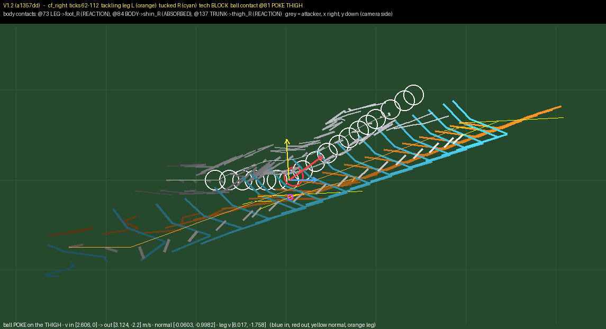
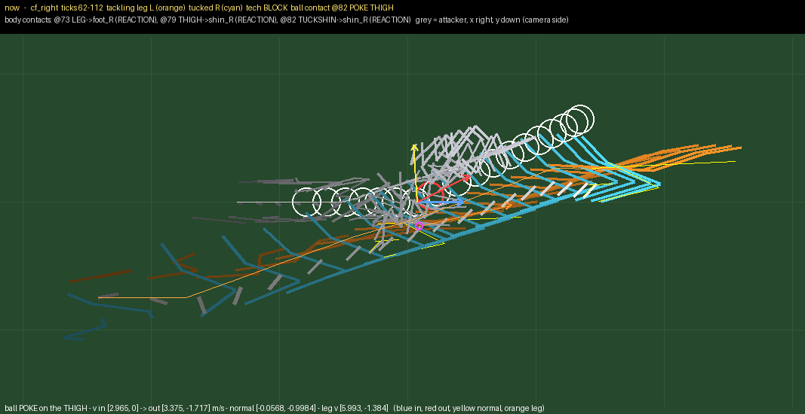
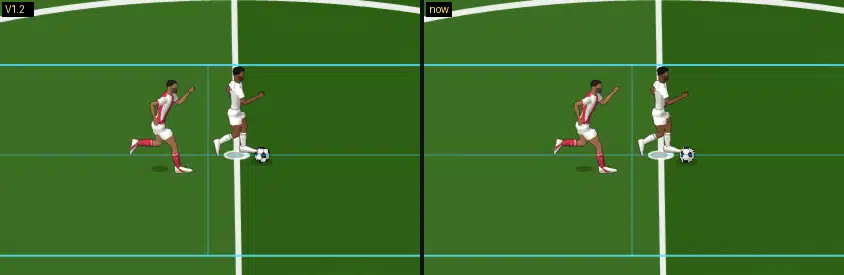
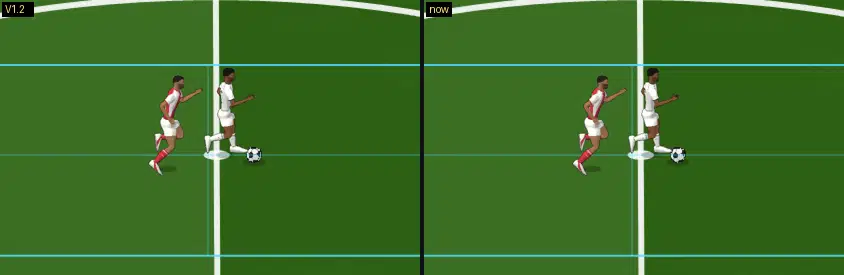
cf_left — identical start, identical slide request
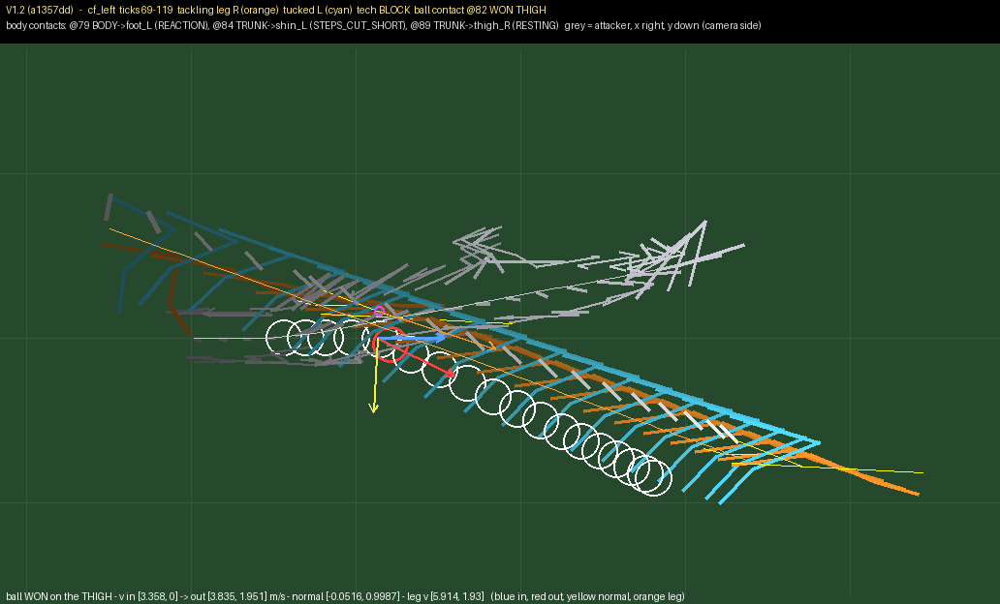
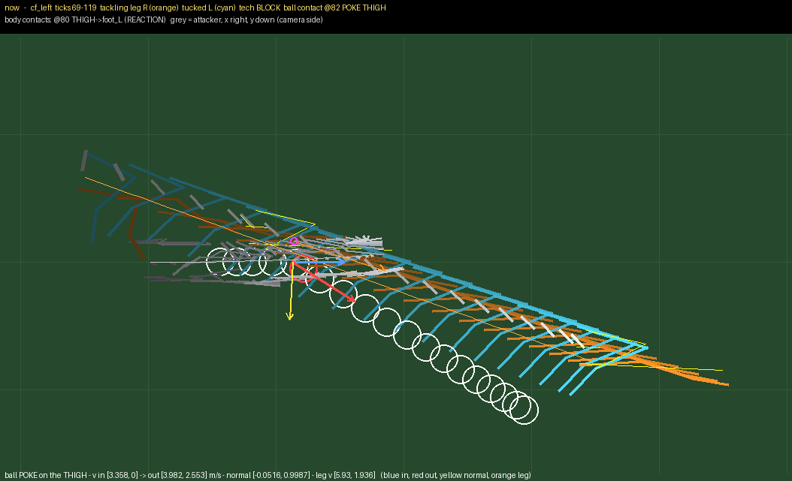
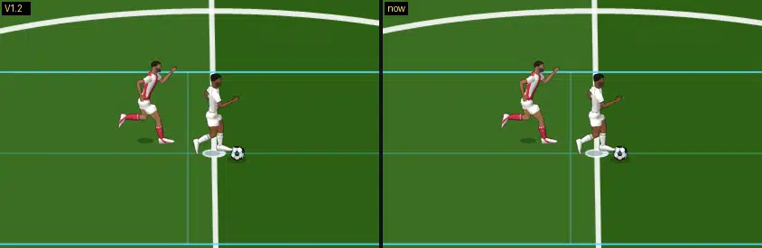
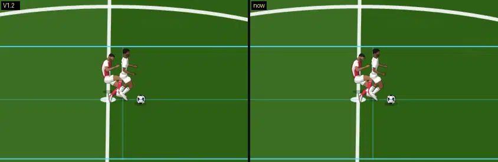
blk_front — identical start, identical slide request
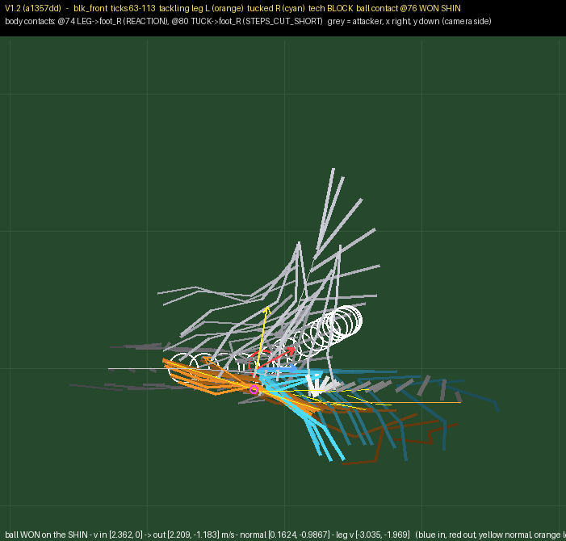
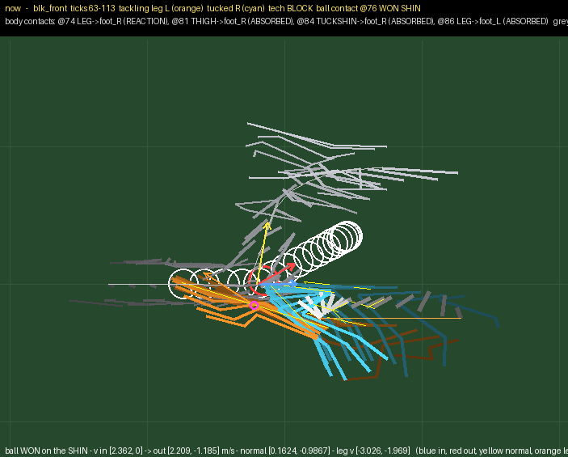
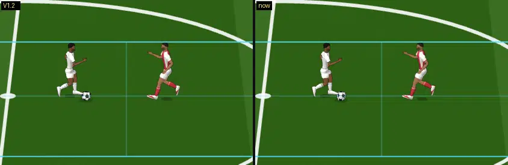
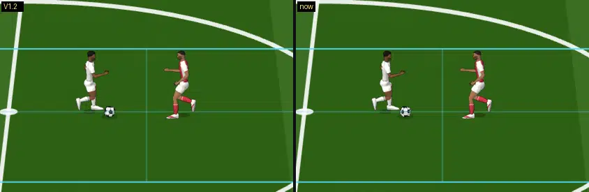
sl_loose — identical start, identical slide request
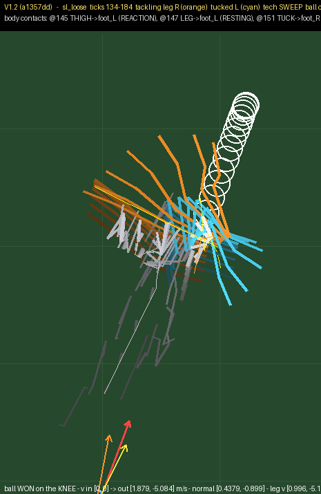
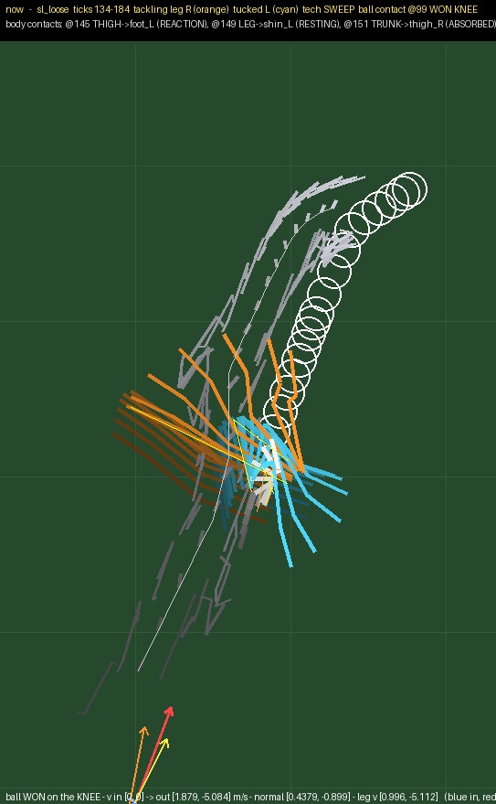
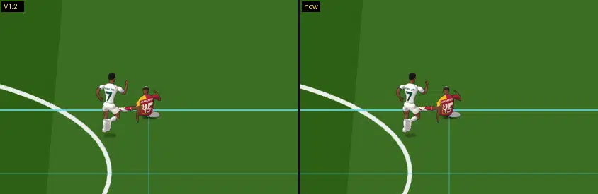
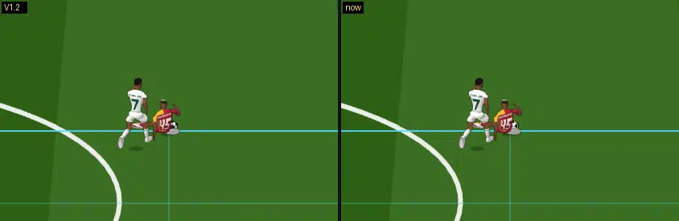
rx_lateral — identical start, identical slide request
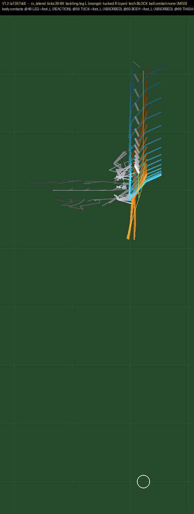
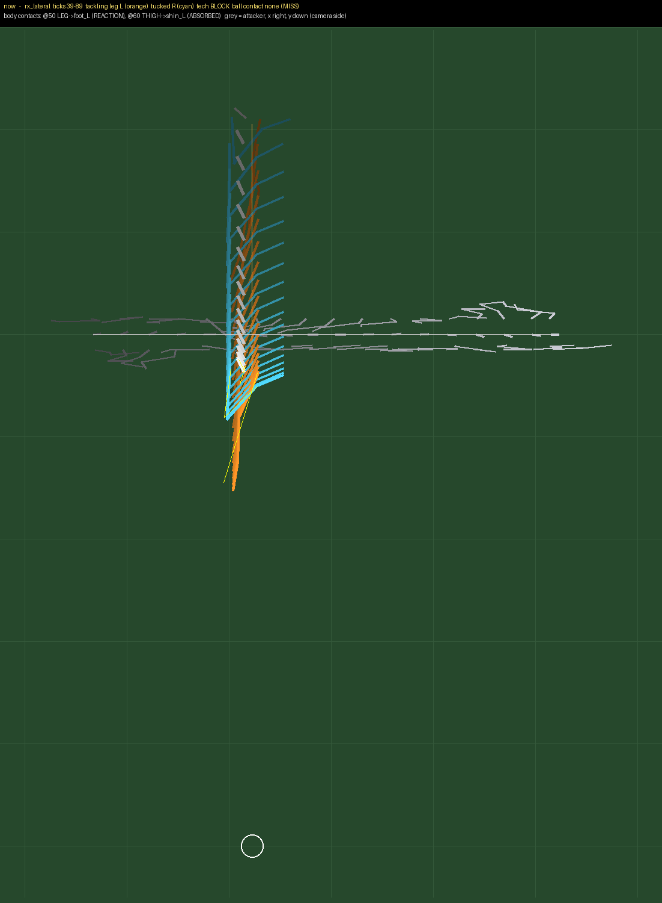
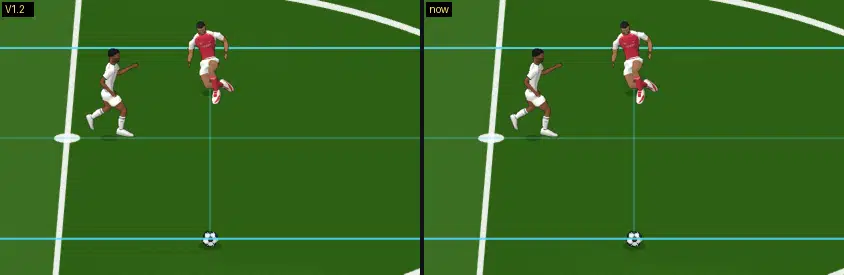
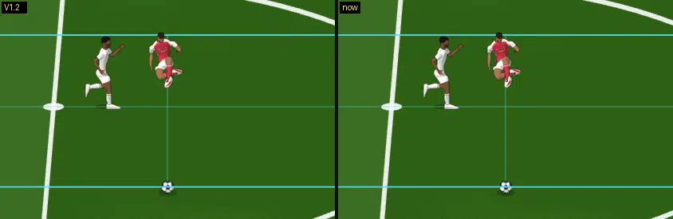
rx_standing — identical start, identical slide request
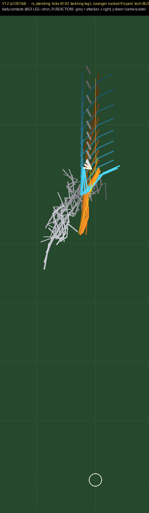
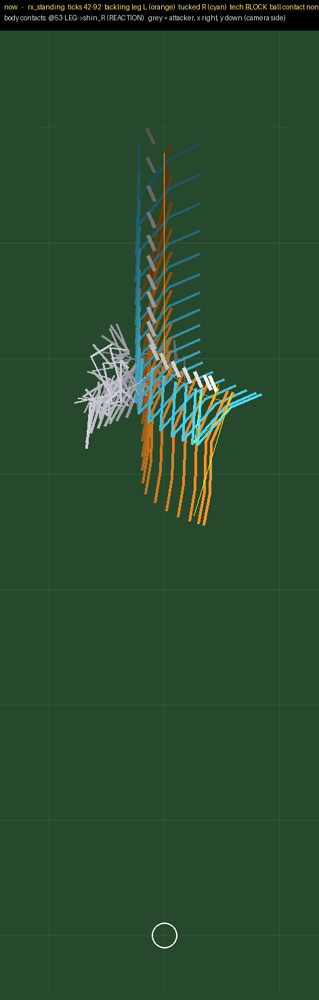
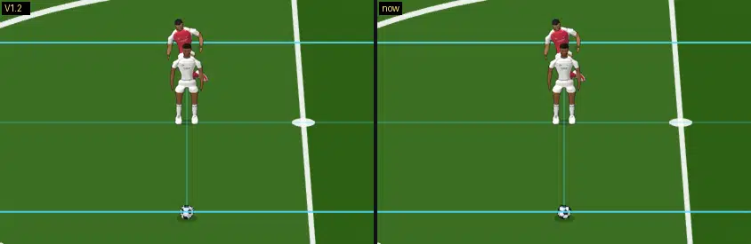
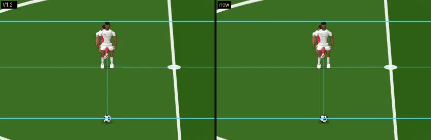
sl_from_behind — audit of the V1.2 MISS → WON
| approach | slide requested at tick 73, v0 7.5 m/s, direction 0.2104 rad: 12.1° from the carrier's line, on his right and behind him; the ball 1.11 m to the side of the slide line, 3.281 m ahead → far leg R, tucked L, SWEEP |
|---|---|
| first contact | tick 87: LEG → foot_R, NO_BALL, from behind = True — the man first. Reaction: foot_R (planted=True) → FALL SIDE. He falls and the ball runs loose. |
| ball contact | WON at tick 124 on the FOOT (along 1) — 37 ticks after the man; the ball LOOSE (the quality law treats a loose ball as fully exposed: q 1, exposure 1.2); leg velocity [1.6, 0.342] m/s, normal [0.9369, -0.3495], ball [0.418, 0] → [1.508, -0.094] m/s |
| penetration | pelvis / torso ↔ torso 0.0 cm, torso ↔ leg 0.0 cm, leg ↔ leg 6.9 cm — the far leg does not reach anything by passing through him |
| rendered boot at the ball | BOOT face 2.5 cm from the ball surface at the contact instant; rendered vs simulated normal 45.4° (at the very end of the fully swept leg; V1.2 showed the boot 10.3 cm short here — see the reach calibration) |
Verdict. The corrected geometry is why the slide now touches anything: V1's straight near leg passed 12 cm short of everything. The sequence is physically coherent, and nothing passes through the attacker. It is not a clean ball-winning tackle, though. The far leg takes the carrier's planted foot from behind, man first. The ball contact is the still-sliding, fully swept leg meeting the ball that his fall released, 37 ticks later. The simulation keeps the result (a real contact of the leg with a loose ball, WON by the unchanged quality law, exactly as V1 treats any loose ball the slide meets). The foul facts record it as a man-first challenge from behind, which is what a future referee needs. Nothing in this fixture is special-cased.
0 · Stop conditions
- MET 1. The researched sweep geometry and the correct leg for the side. The near (ball-side) leg tucks and he drops on that hip; the far leg sweeps across (SWEEP 0 → 75°, BLOCK 0 → 17°). Defender on the attacker's right → tackling R, tucked L. On his left → tackling L, tucked R. Verified in world coordinates on the rendered rig (§1, §4).
- MET 2. The body travels beside the attacker, and where the slide line cuts across him, the bodies interact instead of passing through each other. Side-on slides along the run: zero core-body overlap (the aimed side-on 22.7 cm → 0,
sl_left20.2 → 0). Cross-line slides (the follow-up, §Follow-up): pelvis / torso ↔ pelvis / torso is now 0 cm in every fixture (cf_rightwas 12.3 cm). Torso ↔ leg, V1.2 → now:blk_front13.5 → 0,cf_right21.2 → 6.6,cf_left22.1 → 10.6 cm,sl_loose16.3 cm over 16 ticks → 16.2 cm over 5 ticks. The slider is slowed and deflected, the attacker is pushed off, steps around, is overrun, or goes over; a faller's fall rotates around the slider's upper body. No root is ever moved more than 4.6 cm per tick beyond its velocity. Residual: two limb brushes of about 80 ms (sl_loose16 cm,cf_left10.6 cm) and leg ↔ leg tangles up to ≈ 13 cm in pile-ups, listed in the follow-up. - MET 3. The attacker responds continuously to meaningful follow-through contact. One challenge now keeps a contact history. A second leg or the seat met re-enters the balance model; failing steps that meet the slider are cut short; he goes over the slider and is caught on it; his corrective steps go around it; the slider is stopped by a body on the pitch. Examples:
rx_free_legshin → STUMBLE then planted foot → FALL;blk_frontfoot → ball → next step cut short → over → caught. - MET 4. The ball contact corresponds to the final rendered tackling foot. Side-on sweeps: the rendered boot face is −2.0 to −0.2 cm from the ball surface at the contact instant, and the normal agrees with the simulation's to within 6–8°. The patch (boot / shin) matches the simulated region. End-of-leg contacts after the reach re-calibration: the boot within +2.5 cm (
sl_from_behind, was 10.3 cm short). Shin contacts on the converging slides leave up to a 5.2 cm gap: the boot is tracked, not the shin. - MET 5. The deflection follows the contact geometry. A sweep drives the ball across and back (the hook), a block along the line, a poke harder along the normal. A glance keeps V1's 1 m/s, now along the normal (§5).
- MET 6. Misses remain misses; clean ball-only tackles remain possible. Wide (1.3 m) and early slides miss with no contact at all. The left-side sweep and the aimed side-on win the ball with no body contact. The quality law and its thresholds are unchanged.
- MET 7. Left and right are symmetric. The simulation's geometry is an exact mirror: same tick, same region, normal and ball velocity mirrored, spin sign flipped. Where the two sides differ, it is the attacker's own stride (his right foot planted on one side), which is recorded.
- MET 8. No unrelated football outcome changes. The 60 frozen single-player scenarios, 27 squad fixtures and auto pass / receive are identical. All standing-tackle and jockey fixtures are bit-identical. Every slide fixture is identical up to its request. Games and demos diverge only after a slide request.
interceptis identical when run on its own. Animation ON/OFF and determinism pass everywhere, and the tunnelling test found 0 misses (§9, §10).
1 · The leg selection: what the technique is
Sources: Human Kinetics, Soccer has three basic tackles (figure 11.17); Soccer Coach Weekly, How to coach the slide tackle; B. Christensen, Teaching the Slide Tackle (2004). All three describe the same side-on chase → drop → sweep:
- "The tackling player chases the ball until confident that his lead foot will overtake the ball. The near leg leads, allowing the player to sink down on the left leg, which curls beneath the seat of the defender. The far leg swings around in a wide sweep, with the foot hooked, towards the ball. The tackling leg sweeps through the ball and either traps it with the hooked foot or, more usually, plays the ball away." (Human Kinetics)
- "Approach from the side and tackle across the path of the opponent. Tackle using the leg furthest from the ball and keep it slightly bent. Tuck the leg nearest the ball underneath the backside and ideally slide on the outer thigh." Contact through the centre-to-top half of the ball. (Soccer Coach Weekly)
- "Slide onto your hip area … on one hip." "Tackling leg even with the belly of the ball." "HOOK the ball, don't poke it away. If you have to poke it away, you are too far behind." "Gain a tiny bit of space between you and the opponent right before your slide, NOT shoulder to shoulder." (Christensen)
Your reading was right. With the defender on the attacker's right, the ball and the attacker are on the defender's left: he tucks his left (near) leg, drops onto his left hip, and his right (far) leg sweeps from his right across toward the ball.
What the game did (measured, not assumed). V1 chose foot = the ball's side, i.e. the near leg, and extended it straight along the slide from the far hip. In the rendered V1 pose he lay on his far hip with the far leg tucked. To reach a ball at the carrier's feet with a straight leg, the slide had to be aimed at the ball, and that line runs through the carrier.
World coordinates, verified on the rendered rig (the known Dribbling ofBootPlan mirror is not involved): +y is toward the camera (the near touchline draws lower on screen). A player facing +x has thigh_R at +y, which is his right as the camera sees it. The GL view matrix has determinant −1, the reflection a left-handed pitch frame needs, so _R bones render on the character's anatomical right. The simulation's right = (−fy, fx) is therefore correct, and every left/right below is in world terms.
2 · The rule, from the geometry
- Which leg. The ball's side of the slide line, where the ball will be in 0.3 s, is the near side. That leg tucks and he drops on that hip. The far leg tackles. If the ball is within 5 cm of the line, the nearest opponent's side decides. There is no alternation and no preferred-foot rule. Recorded at the request:
foot / tuck / tech, the ball's lateral offset, which side of the carrier he is on, and the approach angle. - Which technique. SWEEP when the ball is genuinely beside the line (≥ 0.35 m): the far leg comes across 0° → 75°. BLOCK when the ball is on the line: the same top leg comes barely across (0° → 17°) and drives the ball along the slide. Both are the researched slide (lie on the bottom hip, top leg extended). They differ only in how far the leg has to come across.
- The sweep is a kinematic commitment, not an aim. It starts 0.04 s after the drop and takes 0.20 s. The pelvis turns with it (30% of the sweep angle), since hip rotation drives a sweep. The foot is never steered to the ball; the player's skill is the timing of the request (and the AI's aiming aid picks the direction).
- The leg as the simulation holds it. The top hip is 0.08 m behind the root and 0.05 m to the tackling side (lying on the near hip puts it nearly over the pelvis). The leg runs knee → toe tip to 1.20 × leg length (1.12 m for a 0.865 m leg: as far as the rendered Astra leg + boot gets under the contact-tracking IK, measured; the follow-up corrected V1.2's 1.25). The contact radius is 0.05 m about the leg's axis, the rendered boot's half-thickness. V1's 1.12 × leg reach and 0.08 m radius matched V1's straight near-leg pose.
- The AI aiming aid rolls the same law forward. It wants the lower leg (knee → boot) on the ball first, and among ball-first lines prefers one whose body passes beside the carrier ("a tiny bit of space … not shoulder to shoulder"). It is an input, never part of the contact law.
3 · Diagnosis, measured before anything changed
On the V1 build (baseline/tackled-player-v1), every side-on chase with the slide along the run MISSED: the straight near leg can't reach a ball 0.6–1.05 m to the side. With the AI aiming aid, the slide was angled at the ball. It won the ball, but the defender's root passed within 0.2 m of the attacker's, and the rendered bodies overlapped for 39 ticks (head into torso 22.6 cm, torso through his thighs 20 cm). Measured on the final rendered skeletons (of_slide_geo.js), the phasing came from three causes:
- The slide's root trajectory. A straight near leg forces an aim at the ball, and at a carrier's feet that line goes through his legs.
- Body collision evaluated once. The first contact of a challenge (often foot on foot, a mild correction) was the only one. The sliding seat and trunk then ploughed through both legs with nothing re-evaluated.
- No collision in the slow end of the slide. A slide still moving was excluded from disc occupancy but not yet a lying capsule, so a player going back for the ball walked through the defender. During a fall's failing steps (the steps before he leaves his feet) the victim counted as "falling" and was not tested, so he ran through the defender too.
It was not the reaction starting late (reactions start on the contact tick) and not sub-stepping (see §8).
4 · Side-on sweep geometry — both sides
defender on the attacker's RIGHT — sw_right
| technique | R (far) / tuck L · SWEEP · ball 0.90 m beside the slide line · CARRIER_RIGHT |
|---|---|
| ball | WON FOOT @80 · along the leg 0.879 · normal [-0.8332, -0.553] · leg velocity there [-2.105, -4.962] m/s · ball [3.498, 0] → [-2.892, -4.738] m/s |
| rendered at the contact | BOOT face -0.7 cm from the ball surface at the contact instant (-1.3 cm in the drawn frame) · rendered vs simulated normal 4.5° |
| contact sequence | #1 BODY LEG→foot_R FALL/REACTION → #2 BALL FOOT → #3 OVER |
| bodies | closest roots 0.90 m · worst core-body overlap 2.1 cm (0 ticks > 5 cm) · limb 5.0 cm |
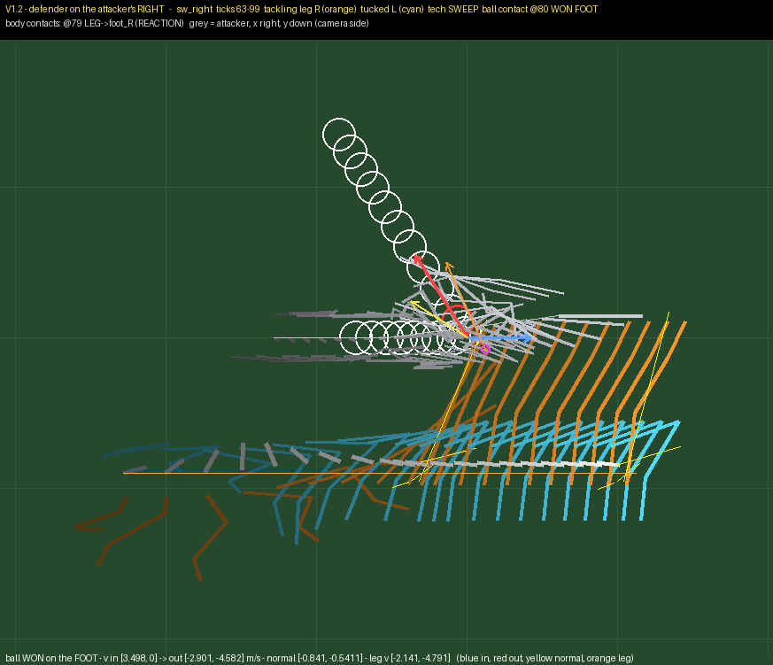
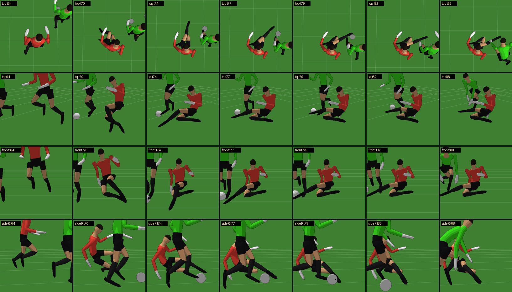
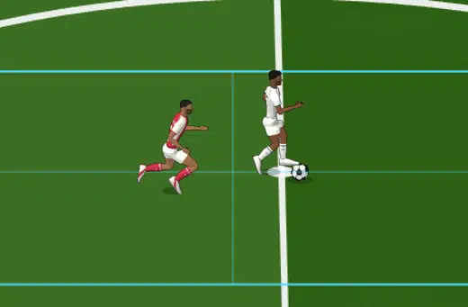
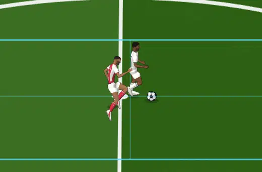
defender on the attacker's LEFT — sw_left
| technique | L (far) / tuck R · SWEEP · ball 0.90 m beside the slide line · CARRIER_LEFT |
|---|---|
| ball | WON FOOT @80 · along the leg 0.87 · normal [-0.8332, 0.553] · leg velocity there [-0.852, 4.935] m/s · ball [3.498, 0] → [-1.798, 4.334] m/s |
| rendered at the contact | BOOT face -0.0 cm from the ball surface at the contact instant (-0.8 cm in the drawn frame) · rendered vs simulated normal 3.7° |
| contact sequence | #1 BALL FOOT |
| bodies | closest roots 0.90 m · worst core-body overlap 0.0 cm (0 ticks > 5 cm) · limb 0.0 cm |
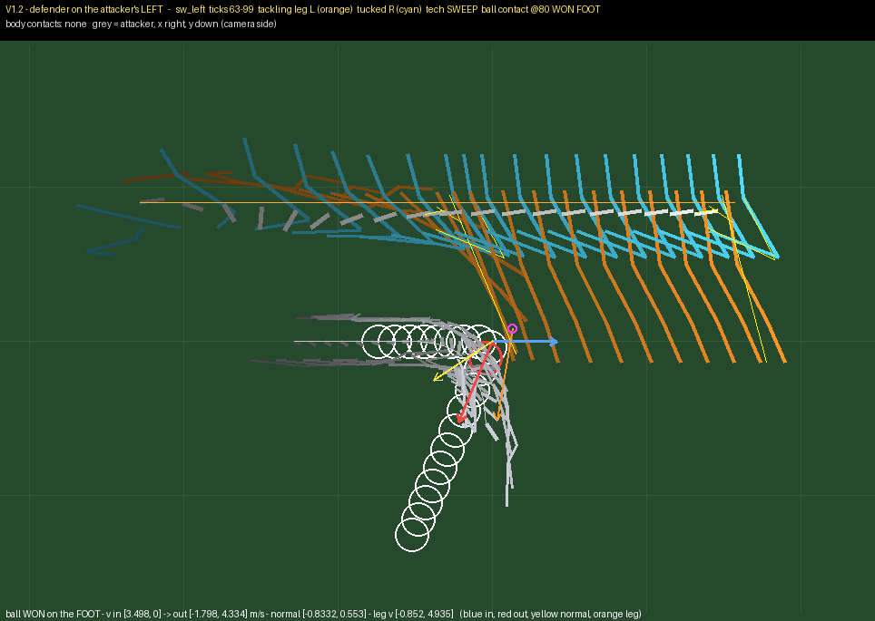
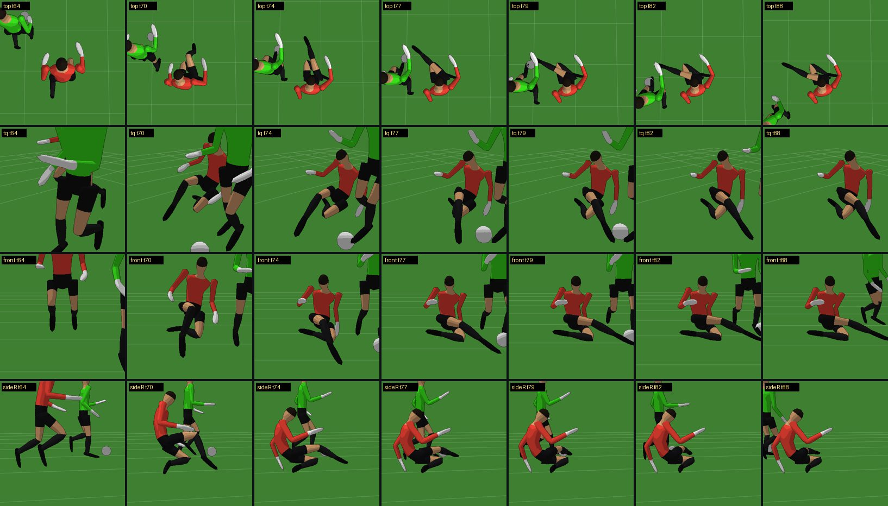
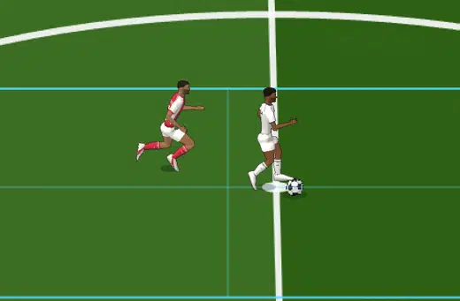

5 · Ball physics: the contact decides where the ball goes
At the first touching sub-step, the ball's new velocity follows from the contact itself:
- the contact point and horizontal normal (leg → ball centre);
- the leg's own velocity there: the slide's, plus the sweep's ω × distance from the hip;
- restitution set by the authoritative outcome: WON is a hook / sweep-through that carries the ball with the boot (e 0.15); POKE is a knock away (e 0.50);
- the leg's effective mass (the shin + foot share of his recorded weight) against the ball's 0.43 kg;
- Coulomb-limited tangential drag (μ 0.3).
A GLANCE keeps V1's 1 m/s touch, now along the contact normal instead of the slide direction; the carrier rides it. The ball is then placed so the rest of the tick runs from the contact point with its new velocity (the keeper-contact convention). A sweep drives the ball across and back, "toward the defender's starting direction" as the coaching note says. A block drives it along the line. Spin: a ground ball rolls before (ω = v / r). The tangential impulse's spin about the vertical is recorded but not simulated, because the playtest ball has no spin state.
The rendered boot follows the leg. Its inside face is tracked, every tick of the sweep, onto the simulation leg's leading surface: the axis plus 0.05 m toward where the leg is moving. The thigh, knee and foot are solved per sweep angle so the whole boot continues the leg's line (a locked, hooked ankle). The contact-tick measurement reads the final rendered boot after every layer, including the slide pose, the alignment, the reach IK and the ground drop.
| case | technique | outcome · region | leg velocity at the contact | normal | ball in → out (m/s) | e | spin z (rad/s, recorded) | rendered face at contact | normal Δ |
|---|---|---|---|---|---|---|---|---|---|
| sw_left | L (far) / tuck R · SWEEP | WON FOOT @80 | [-0.852, 4.935] | [-0.8332, 0.553] | [3.498, 0] → [-1.798, 4.334] | 0.15 | -9.31 | -0.0 cm BOOT | 3.7° |
| sw_right_tight | R (far) / tuck L · SWEEP | WON SHIN @77 | [0.903, -7.03] | [-0.6348, -0.7727] | [2.292, 0] → [-0.956, -6.089] | 0.15 | 18.49 | -1.6 cm SHIN | 14.3° |
| cf_right | L (far) / tuck R · BLOCK | POKE THIGH @82 | [5.993, -1.384] | [-0.0568, -0.9984] | [2.965, 0] → [3.375, -1.717] | 0.5 | 6.92 | 8.9 cm SHIN | 5.6° |
| sw_glance | L (far) / tuck R · SWEEP | GLANCE FOOT @80 | [-0.852, 4.935] | [-0.8332, 0.553] | [3.498, 0] → [2.665, 0.553] | None | 0 | -0.0 cm BOOT | 3.7° |
| blk_front | L (far) / tuck R · BLOCK | WON SHIN @76 | [-3.026, -1.969] | [0.1624, -0.9867] | [2.362, 0] → [2.209, -1.185] | 0.15 | -4.68 | -0.1 cm SHIN | 2.1° |
| sw_right_wide | R (far) / tuck L · SWEEP | MISS | — | — | — → — | — | — | — | — |
CLEAN SWEEP — the far leg sweeps through the ball, no body contact
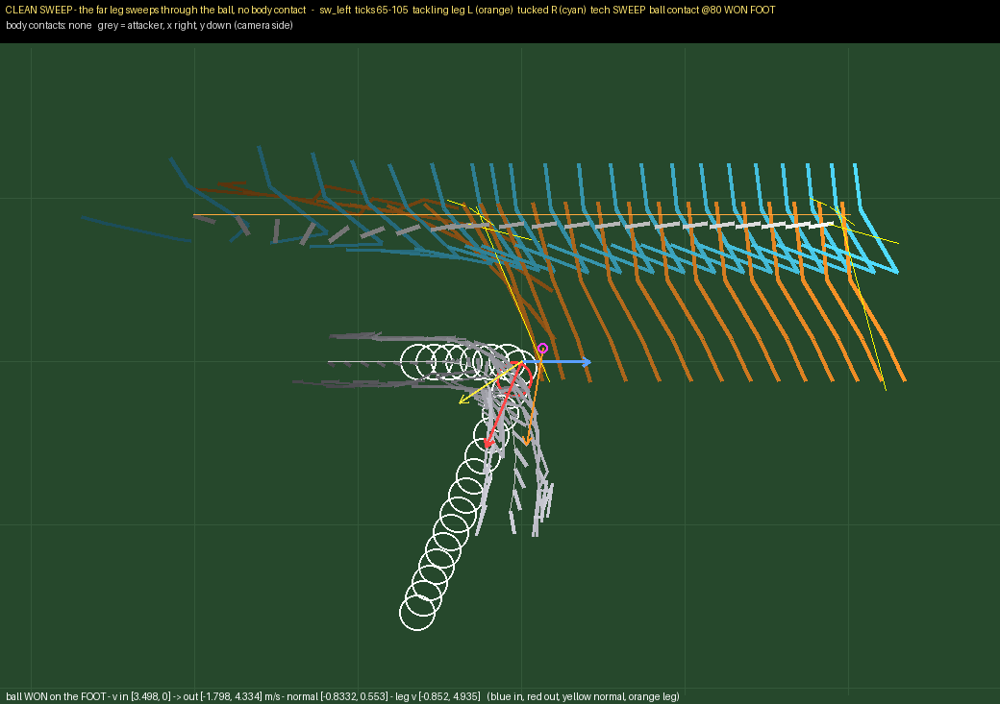
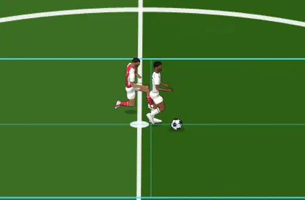
SWEEP at the shin, shoulder to shoulder (0.65 m)
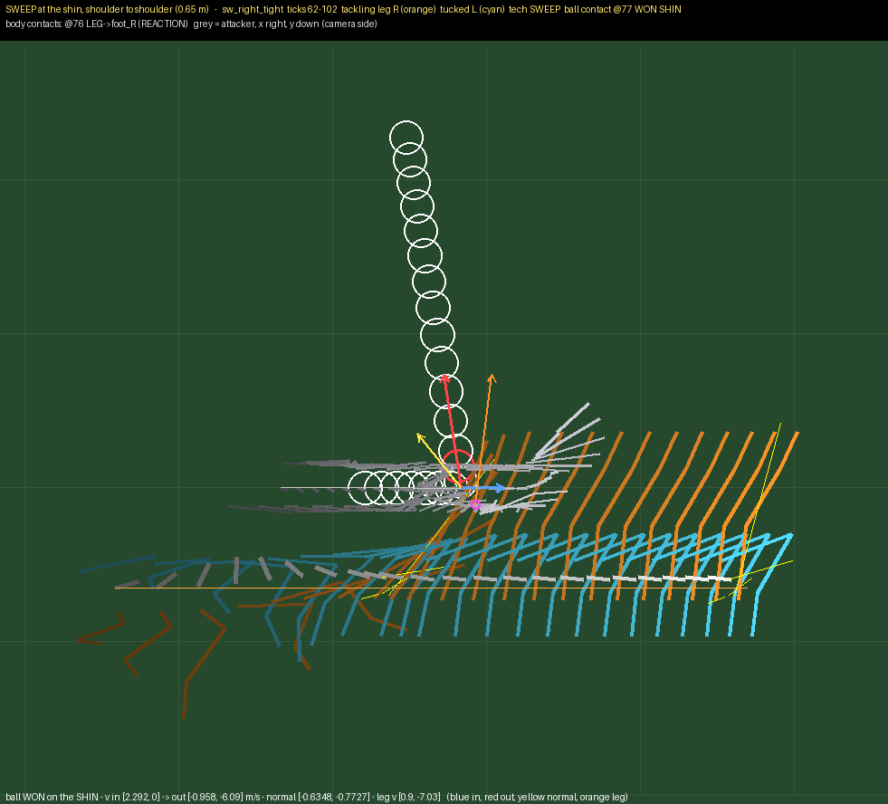
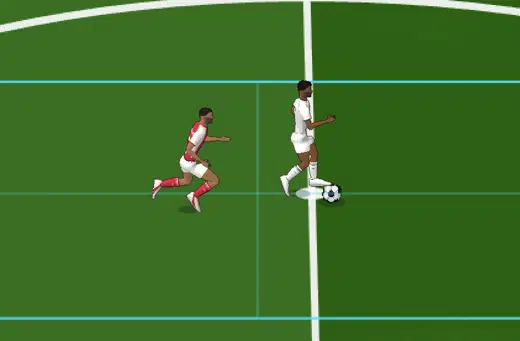
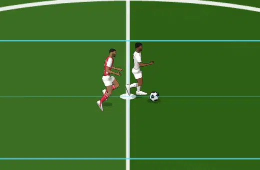
POKE / CLEAR — the quality law's POKE: the ball knocked away (restitution 0.5)
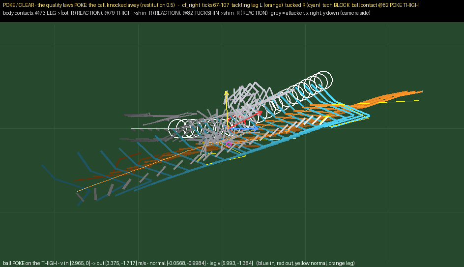
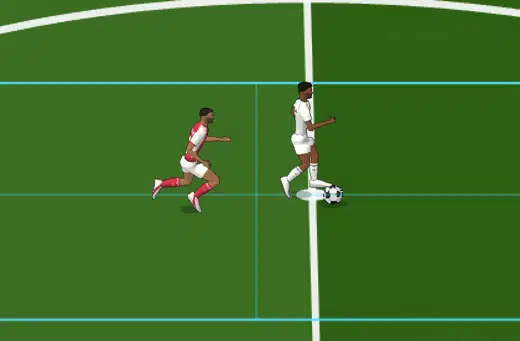
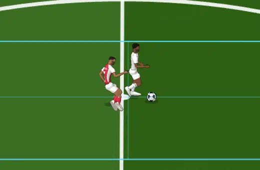
GLANCING — a weak slide against a strong, balanced carrier: he rides it
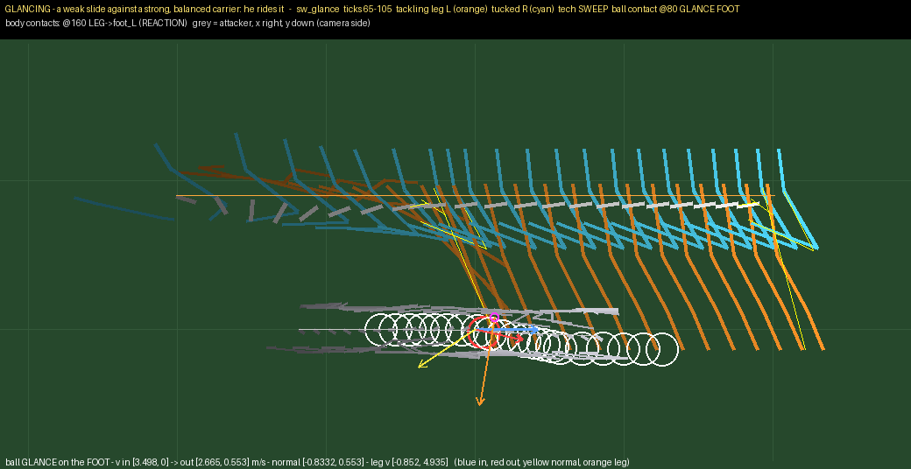
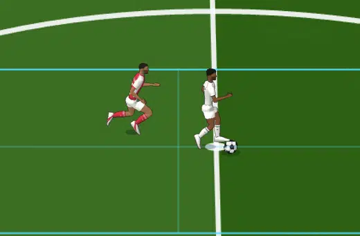
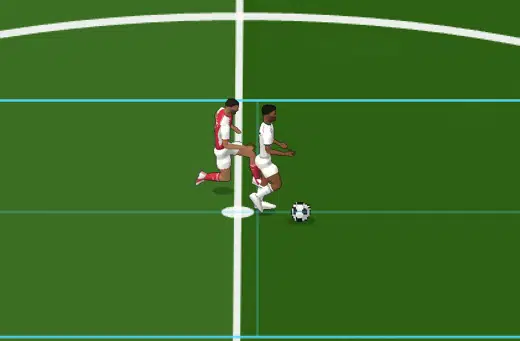
BLOCK — head-on, the ball on the slide line: the straight block, the ball driven along the line
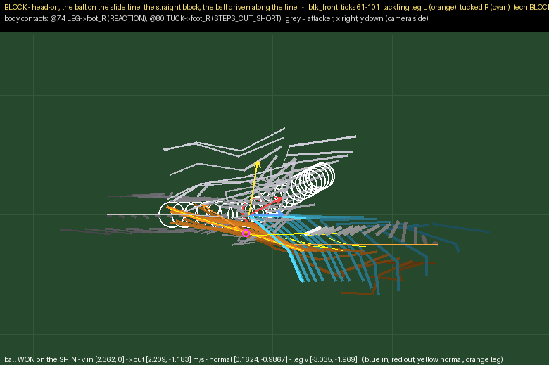
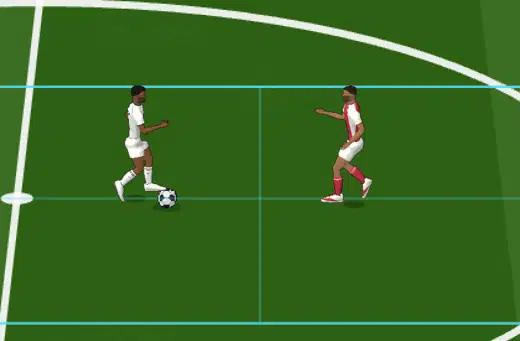
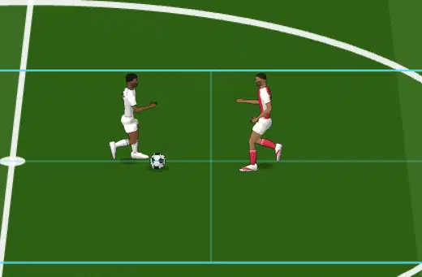
MISS — 1.30 m, beyond the sweep
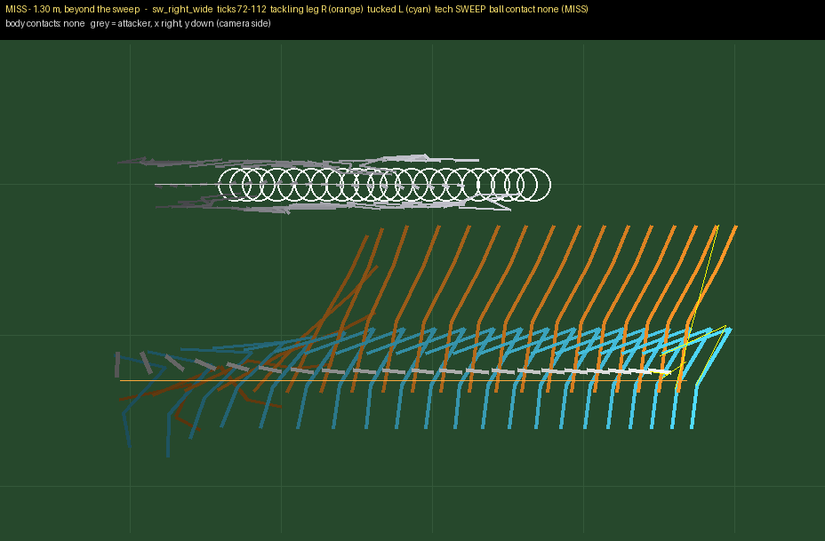
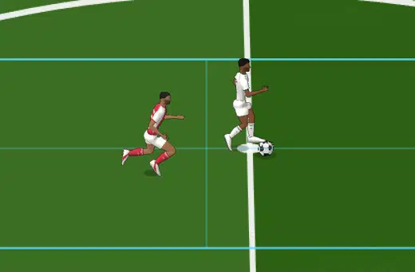
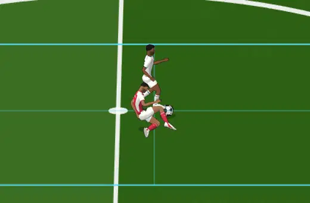
6 · Body contact through the follow-through: one challenge, a short contact history
- First contact, exactly as V1: segment + support state + relative velocity + impulse + capture point → correction / stumble / fall.
- Every tick of the slide's travel, the slider's parts (sweeping leg, its thigh, tucked leg, seat, reclined trunk; measured on the rendered pose) are tested against each opponent in reach. A new part of him met, or the same contact still driving into him at ≥ 1 m/s 0.1 s later, is resolved again through the same law from his state now. The stronger reaction wins; a weaker one is absorbed by the stepping already under way. A fall still in its failing steps whose next step meets the slider is cut short and starts now. The slider pays every impulse. At most 4 body resolutions per victim.
- Still on his feet (correcting / stumbling, or in the steps before a fall): a bounded non-penetration constraint on the rigid body-to-body contacts. The closing velocity plus a separating bias is shared by the two players' masses: the slider is slowed and deflected sideways, he is pushed (
NONPEN). A weight-bearing leg trapped under the slider's body is anOVERRUN: his support is lost, through the same balance law. See the follow-up section at the top. - Falling (in the air), he goes over the slider. His falling body (pelvis over his root, head going where his head goes, legs trailing) stops the slider's seat and trunk, and he is steered off the slider: the part of his fall travel driving into it is removed, plus a separating push. If his trunk topples into the slider's upper body, his fall rotates around it. On the ground, he cannot slide through the slider's body (a velocity constraint), and a slide still moving cannot pass through a body already on the pitch. Never a displacement.
- The presentation lays a faller on the slider's rendered body where he lands on it: the pitch or the slider's seat / trunk / legs, whichever is higher, is his ground.
- Every contact, ball and bodies, enters the challenge's history in order (≤ 12 entries:
BALL,BODYwith segment / planted / impulse / reaction / how it was taken,OVER,FALLER_CAUGHT,NONPEN,OVERRUN,SLIDER_BLOCKED_BY_FALLER,FALLER_STEERED,FALL_DEFLECTED,LANDED_ON,GROUND_BLOCK). Each entry carries its ball-first / simultaneous / man-first / no-ball order: the facts a future referee reads. No foul is called.
| case | ball | reaction(s) | contact history | core overlap · ticks>5cm | limb overlap · ticks>5cm | closest roots |
|---|---|---|---|---|---|---|
| sw_left | WON FOOT @80 | none | BALL | 0.0 cm · 0 | 0.0 cm · 0 | 0.90 m |
| sl_win | WON FOOT @69 | foot_R→CORRECTION | BALL → BODY foot_R | 9.7 cm · 1 | 0.0 cm · 0 | 1.17 m |
| blk_front | WON SHIN @76 | foot_R→FALL FRONT, foot_R(planted)→FALL [ABSORBED], foot_R(planted)→FALL [ABSORBED], foot_L→FALL [ABSORBED] | BODY foot_R → BALL → BODY foot_R → NONPEN → BODY foot_R → BODY foot_L → OVER | 10.9 cm · 13 | 0.0 cm · 0 | 0.57 m |
| sw_right_tight | WON SHIN @77 | foot_R→CORRECTION | BODY foot_R → BALL | 0.0 cm · 0 | 0.0 cm · 0 | 0.65 m |
| sw_right | WON FOOT @80 | foot_R(planted)→FALL FRONT | BODY foot_R → BALL → OVER | 2.1 cm · 0 | 5.0 cm · 0 | 0.90 m |
| rx_standing | MISS | shin_R(planted)→FALL SIDE | BODY shin_R → OVER → FALLER_STEERED | 9.5 cm · 8 | 3.8 cm · 0 | 0.27 m |
| sw_right_early | MISS | none | — | 0.0 cm · 0 | 0.0 cm · 0 | 3.22 m |
clean ball-only tackle — the body passes beside him
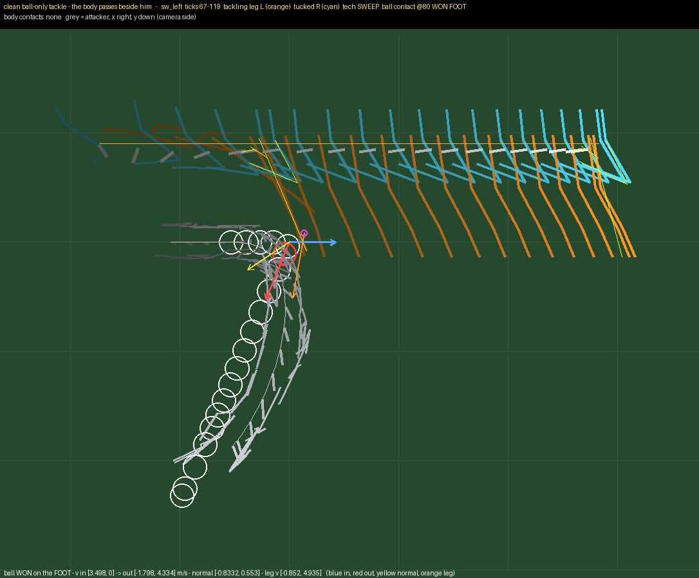

ball first, then the attacker (the V1 fixture, V1.2 geometry)
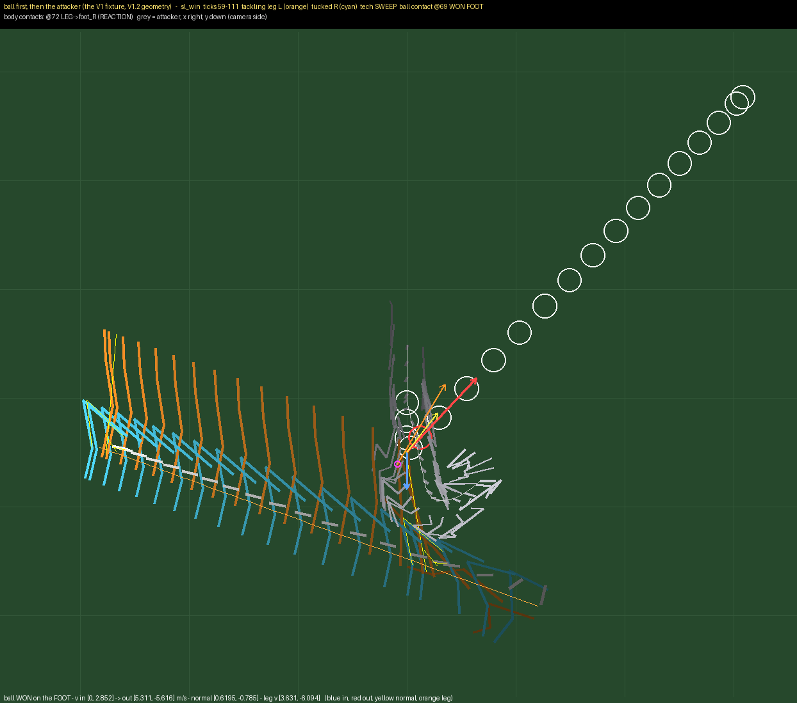
the attacker goes over the tackler (head-on: leg → ball → his next step cut short → over → caught on the slider)
weak contact: he corrects a step and runs on
planted-leg sweep → fall (the sweep takes his planted right foot a tick before the ball)
a standing player swept: he topples over the slider, the slider is stopped against his legs
miss — no phantom collision
7 · Before / after at identical starting states
The same fixture, the same inputs, the same slide request. Before is the frozen V1 build (baseline/tackled-player-v1); after is this build. Overlap is measured every tick on the final rendered capsules, from the slide request on. "Core" means trunk, head and legs of both players. "Limb" means any pair involving an arm.
| fixture | build | tackling leg | ball | reaction(s) | core overlap · ticks>5cm | limb overlap · ticks>5cm | closest roots |
|---|---|---|---|---|---|---|---|
| sw_right_aim | V1 (tackled-player-v1) | L (near, V1) | WON @78 | foot_R→CORRECTION | 22.7 cm · 32 | 10.9 cm · 14 | 0.13 m |
| V1.2 | R (far) / tuck L · SWEEP | WON FOOT @82 | none | 0.0 cm · 0 | 0.0 cm · 0 | 1.06 m | |
| sw_right | V1 (tackled-player-v1) | L (near, V1) | MISS | none | 0.0 cm · 0 | 0.0 cm · 0 | 0.90 m |
| V1.2 | R (far) / tuck L · SWEEP | WON FOOT @80 | foot_R(planted)→FALL FRONT | 2.1 cm · 0 | 5.0 cm · 0 | 0.90 m | |
| sw_left | V1 (tackled-player-v1) | R (near, V1) | MISS | none | 0.0 cm · 0 | 0.0 cm · 0 | 0.90 m |
| V1.2 | L (far) / tuck R · SWEEP | WON FOOT @80 | none | 0.0 cm · 0 | 0.0 cm · 0 | 0.90 m | |
| blk_front | V1 (tackled-player-v1) | R (near, V1) | WON @74 | foot_R→FALL FRONT | 19.8 cm · 19 | 9.7 cm · 4 | 0.26 m |
| V1.2 | L (far) / tuck R · BLOCK | WON SHIN @76 | foot_R→FALL FRONT, foot_R(planted)→FALL [ABSORBED], foot_R(planted)→FALL [ABSORBED], foot_L→FALL [ABSORBED] | 10.9 cm · 13 | 0.0 cm · 0 | 0.57 m | |
| sl_win | V1 (tackled-player-v1) | L (near, V1) | WON @67 | foot_R→FALL FRONT | 21.4 cm · 5 | 7.8 cm · 2 | 0.11 m |
| V1.2 | L (far) / tuck R · SWEEP | WON FOOT @69 | foot_R→CORRECTION | 9.7 cm · 1 | 0.0 cm · 0 | 1.17 m | |
| sl_left | V1 (tackled-player-v1) | R (near, V1) | WON @67 | foot_L(planted)→FALL FRONT | 20.2 cm · 16 | 18.6 cm · 6 | 0.17 m |
| V1.2 | R (far) / tuck L · SWEEP | WON FOOT @69 | foot_L(planted)→FALL FRONT | 0.0 cm · 0 | 0.0 cm · 0 | 1.15 m | |
| sl_from_behind | V1 (tackled-player-v1) | L (near, V1) | MISS | none | 9.1 cm · 16 | 9.5 cm · 11 | 0.40 m |
| V1.2 | R (far) / tuck L · SWEEP | WON FOOT @124 | foot_R(planted)→FALL SIDE | 6.9 cm · 1 | 8.6 cm · 5 | 1.12 m | |
| sl_loose | V1 (tackled-player-v1) | L (near, V1) | WON @89 | foot_R→STUMBLE | 13.4 cm · 8 | 9.2 cm · 4 | 0.27 m |
| V1.2 | R (far) / tuck L · SWEEP | WON KNEE @99 | foot_L→STUMBLE, thigh_R→STUMBLE [OVERRUN], shin_L→STUMBLE [RESTING], thigh_R→STUMBLE [ABSORBED], foot_R→STUMBLE [RESTING] | 16.2 cm · 7 | 8.5 cm · 3 | 0.33 m | |
| rx_standing | V1 (tackled-player-v1) | R (near, V1) | MISS | shin_R(planted)→FALL BACK | 9.9 cm · 16 | 13.6 cm · 40 | 0.53 m |
| V1.2 | L (far) / tuck R · BLOCK | MISS | shin_R(planted)→FALL SIDE | 9.5 cm · 8 | 3.8 cm · 0 | 0.27 m | |
| rx_lateral | V1 (tackled-player-v1) | R (near, V1) | MISS | foot_L→FALL FRONT | 11.6 cm · 8 | 0.0 cm · 0 | 0.59 m |
| V1.2 | L (far) / tuck R · BLOCK | MISS | foot_L→CORRECTION, shin_L(planted)→CORRECTION [ABSORBED] | 9.8 cm · 7 | 0.0 cm · 0 | 0.53 m | |
| rx_planted_leg | V1 (tackled-player-v1) | R (near, V1) | MISS | foot_L(planted)→FALL SIDE | 9.5 cm · 10 | 0.0 cm · 0 | 0.85 m |
| V1.2 | L (far) / tuck R · BLOCK | MISS | shin_L(planted)→FALL SIDE | 8.8 cm · 9 | 0.0 cm · 0 | 0.89 m | |
| rx_free_leg | V1 (tackled-player-v1) | R (near, V1) | MISS | foot_L→CORRECTION | 7.9 cm · 1 | 0.0 cm · 0 | 0.40 m |
| V1.2 | L (far) / tuck R · BLOCK | MISS | shin_L→CORRECTION, foot_R(planted)→CORRECTION [ABSORBED] | 7.9 cm · 1 | 0.0 cm · 0 | 0.55 m | |
| rx_facing_front | V1 (tackled-player-v1) | L (near, V1) | MISS | foot_R(planted)→FALL SIDE | 14.4 cm · 21 | 15.3 cm · 12 | 0.38 m |
| V1.2 | L (far) / tuck R · BLOCK | MISS | foot_L(planted)→FALL SIDE | 9.5 cm · 15 | 0.0 cm · 0 | 0.36 m | |
| rx_front_diag | V1 (tackled-player-v1) | L (near, V1) | MISS | foot_L→FALL FRONT | 20.3 cm · 6 | 8.0 cm · 4 | 0.31 m |
| V1.2 | R (far) / tuck L · SWEEP | MISS | foot_L→CORRECTION, foot_L→CORRECTION [ABSORBED], shin_L(planted)→FALL FRONT [OVERRUN] | 10.9 cm · 8 | 0.0 cm · 0 | 0.46 m |
sw_right_aim — identical start, identical slide request
sw_right — identical start, identical slide request
blk_front — identical start, identical slide request
sl_left
rx_standing
8 · The counterfactual leg test
Same attacker, same ball, same tackler start and speed, and the same slide request, with the same authoritative outcome. These pairs were found by a grid search (of_slide_cf_grid.js, 80 geometries) in which both geometries give POKE → the attacker corrects: 0.60 m to the side, slide angled 10° in. A is the V1 geometry (straight near leg, V1 pose); B is the V1.2 far-leg sweep. The V1 path is still there, bit for bit, behind PT_DEF.slide.rule = "near". It reproduces baseline/tackled-player-v1 exactly on all 24 defending and 17 tackled-player fixtures.
| case | geometry | ball | rendered face at contact | normal Δ | normal | ball out (m/s) | trunk → attacker | tackling leg → attacker | core overlap · ticks>5cm | attacker contacts → reaction |
|---|---|---|---|---|---|---|---|---|---|---|
| cf_right | A · V1 near leg (straight) | POKE @74 | — | — | along the slide (V1) | [2.394, -4.164] | 19.2 cm · | 10.2 cm · | 19.2 cm · 11 | foot_R → foot_R→CORRECTION |
| B · V1.2 far-leg sweep | POKE THIGH @82 | 8.9 cm | 5.6° | [-0.0568, -0.9984] | [3.375, -1.717] | 13.4 cm · | 12.9 cm · | 12.9 cm · 6 | foot_R, shin_R, shin_R → foot_R→CORRECTION, shin_R→STUMBLE, shin_R(planted)→FALL SIDE | |
| cf_left | A · V1 near leg (straight) | POKE @74 | — | — | along the slide (V1) | [2.401, 4.176] | 16.5 cm · | 11.8 cm · | 16.5 cm · 20 | foot_L → foot_L→CORRECTION |
| B · V1.2 far-leg sweep | POKE THIGH @82 | 6.6 cm | 20.6° | [-0.0516, 0.9987] | [3.982, 2.553] | 10.6 cm · | 9.6 cm · | 10.6 cm · 9 | foot_L → foot_L→STUMBLE |
cf_right
cf_left
sl_left 20.2 → 0). Where the line really does cut across him, the bodies now interact through the contact history: see the follow-up section.9 · Continuous collision: can a fast foot or a fast ball cross unseen?
Ball: V1.2 slides against loose balls crossing at 0–40 m/s at many offsets and times. Every tick is re-checked with the simulation's own within-tick kinematics (root and sweep angle linear, ball b → b + v·dt), 400 samples per tick. The simulation's sub-steps are adaptive, so neither leg nor ball moves more than 3.5 cm relative per sub-step (4 to 32, event-driven: only while a slide is live).
| ball speed (m/s) | crossings | dense (400 samples/tick) contact | V1.2 adaptive sub-steps missed | V1 fixed 4 sub-steps would miss |
|---|---|---|---|---|
| 0 | 10 | 10 | 0 | 0 |
| 5 | 90 | 70 | 0 | 0 |
| 10 | 90 | 27 | 0 | 0 |
| 20 | 90 | 14 | 0 | 0 |
| 30 | 90 | 18 | 0 | 0 |
| 40 | 90 | 20 | 0 | 0 |
Bodies: 34 fixtures (side-on and tackled-player), the slider's parts against the attacker's stride-clock segments re-checked with 64 samples per tick: the simulation's 4 sub-steps found the first contact on the same tick in every one (0 missed). Largest adaptive sub-step count used by the ball test: 20.
10 · Regression
Gate script tools/anim3d/of_slide_gates.sh. It checks: 60 frozen single-player scenarios against outfield-runtime-v1; 27 squad fixtures and auto pass / receive against possession-v1.1-handoff; the 24 defending fixtures, 17 tackled-player fixtures and 15 side-on fixtures against tackled-player-v1, with animation ON/OFF and determinism; small-sided games D7–D9 (7200 ticks each) and the defending demos. The V1.2 gates are strict. A fixture without a slide must be bit-identical. A slide fixture must be identical up to the slide request, and its changed facts are listed field by field. For games and demos, nothing may move before the first slide request.
== 1. frozen single-player baseline (baseline/outfield-runtime-v1, 60 scenarios, authoritative + pose) == 2. squad fixtures (27) + auto pass / receive vs baseline/possession-v1.1-handoff BASELINE GATE PASS — every pre-existing scenario is authoritative- and pose-identical to baseline/outfield-runtime-v1 GATE PASS — receiving and passing presentation explain the authoritative outcome, they never change it presentation: 27 fixtures compared — PRESENTATION IDENTICAL == 3. defending fixtures (24) vs baseline/tackled-player-v1: non-slide IDENTICAL, slide changes itemised; ON/OFF; determinism TRACE GATE PASS st_comfort | IDENTICAL st_marginal | IDENTICAL st_just_out | IDENTICAL st_far | IDENTICAL st_left_foot | IDENTICAL st_right_foot | IDENTICAL st_toward | IDENTICAL st_across | IDENTICAL st_from_behind | IDENTICAL st_from_side | IDENTICAL st_tight_ball | IDENTICAL sl_win | EXPECTED CHANGE (slide) | request tick 53, first trace divergence 57 | changed: leg: L → L/tuck R SWEEP · ball: WON@67 v(-3.6,-4.3) → WON@69 FOOT v(5.3,-5.6) · body: LEG→foot_R@71 → LEG→foot_R@72 · react: FALL FRONT → CORRECTION · poss: - → RECEPTION:CLEAN@184 sl_early | EXPECTED CHANGE (slide) | request tick 18, first trace divergence null | changed: leg: R → L/tuck R SWEEP sl_late | EXPECTED CHANGE (slide) | request tick 40, first trace divergence null | changed: leg: R → L/tuck R SWEEP sl_from_behind | EXPECTED CHANGE (slide) | request tick 73, first trace divergence 73 | changed: leg: L → R/tuck L SWEEP · ball: MISS → WON@124 FOOT v(1.5,-0.1) · body: - → LEG→foot_R@87 · react: - → FALL SIDE · poss: - → LOOSE@87 RECEPTION:CLEAN@220 sl_left | EXPECTED CHANGE (slide) | request tick 53, first trace divergence 57 | changed: leg: R → R/tuck L SWEEP · ball: WON@67 v(-3.6,4.3) → WON@69 FOOT v(5.3,5.6) · body: LEG→foot_L@72 → LEG→foot_L@74 sl_loose | EXPECTED CHANGE (slide) | request tick 67, first trace divergence 73 | changed: leg: L → R/tuck L SWEEP · ball: WON@89 v(0.3,-5.2) → WON@99 KNEE v(1.9,-5.1) · body: BODY→foot_R@148 → THIGH→foot_L@145 LEG→shin_L@149(RESTING) TRUNK→thigh_R@151(ABSORBED) BODY→foot_R@153(RESTING) · poss: RECEPTION:LOOSE@161 RECEPTION:CLEAN@223 → RECEPTION:CLEAN@161 jk_stationary | IDENTICAL jk_walk | IDENTICAL jk_dribble | IDENTICAL jk_lateral | IDENTICAL jk_accel | IDENTICAL jk_to_tackle | IDENTICAL jk_to_sprint | IDENTICAL SLIDE GATE PASS — every fixture without a slide is identical to baseline/tackled-player-v1; every slide fixture is identical up to the slide request and its changed facts are listed defending ON/OFF GATE PASS — receiving and passing presentation explain the authoritative outcome, they never change it defending determinism GATE PASS — receiving and passing presentation explain the authoritative outcome, they never change it == 4. tackled-player fixtures (17) + side-on slide fixtures: vs tag (itemised), ON/OFF, determinism react (17 tackled-player fixtures; re-run with two browsers after a Chrome 'Target closed' under the parallel load, which hit the unchanged tag build too): SLIDE GATE PASS — every fixture without a slide is identical to baseline/tackled-player-v1; every slide fixture is identical up to the slide request and its changed facts are listed react ON/OFF GATE PASS — receiving and passing presentation explain the authoritative outcome, they never change it react determinism GATE PASS — receiving and passing presentation explain the authoritative outcome, they never change it SLIDE GATE PASS — every fixture without a slide is identical to baseline/tackled-player-v1; every slide fixture is identical up to the slide request and its changed facts are listed slide ON/OFF GATE PASS — receiving and passing presentation explain the authoritative outcome, they never change it slide determinism GATE PASS — receiving and passing presentation explain the authoritative outcome, they never change it == 5. small-sided games (D7-D9, 7200 ticks) + defending demos: vs tag (divergence only after a slide request), ON/OFF, determinism D7 EXPECTED CHANGE first divergence tick 3567 preceded by SLIDE@3541, SLIDE@3538 D8 IDENTICAL D9 EXPECTED CHANGE first divergence tick 838 preceded by SLIDE@828, SLIDE@828 SLIDE RUN GATE PASS — divergence only after a slide request SSG ON/OFF TRACE GATE PASS SSG determinism TRACE GATE PASS jockey IDENTICAL stand_win IDENTICAL stand_miss IDENTICAL retention IDENTICAL slide_win EXPECTED CHANGE first divergence tick 76 preceded by SLIDE@72, SLIDE@70 slide_miss EXPECTED CHANGE first divergence tick 90 preceded by SLIDE@55, SLIDE@55 intercept UNEXPECTED first divergence tick 101 preceded by no slide SLIDE RUN GATE FAIL (1) demos ON/OFF TRACE GATE PASS intercept run ALONE vs the tag (the one-page demo run shifts its starting geometry through the shared attempt counter; not a slide effect): TRACE GATE PASS V1 path (PT_DEF.slide.rule = "near") vs baseline/tackled-player-v1, 24 defending + 17 tackled-player fixtures: GATE PASS / GATE PASS
Changed facts, fixture by fixture
st_comfort | IDENTICAL st_marginal | IDENTICAL st_just_out | IDENTICAL st_far | IDENTICAL st_left_foot | IDENTICAL st_right_foot | IDENTICAL st_toward | IDENTICAL st_across | IDENTICAL st_from_behind | IDENTICAL st_from_side | IDENTICAL st_tight_ball | IDENTICAL sl_win | EXPECTED CHANGE (slide) | request tick 53, first trace divergence 57 | changed: leg: L → L/tuck R SWEEP · ball: WON@67 v(-3.6,-4.3) → WON@69 FOOT v(5.3,-5.6) · body: LEG→foot_R@71 → LEG→foot_R@72 · react: FALL FRONT → CORRECTION · poss: - → RECEPTION:CLEAN@184 sl_early | EXPECTED CHANGE (slide) | request tick 18, first trace divergence null | changed: leg: R → L/tuck R SWEEP sl_late | EXPECTED CHANGE (slide) | request tick 40, first trace divergence null | changed: leg: R → L/tuck R SWEEP sl_from_behind | EXPECTED CHANGE (slide) | request tick 73, first trace divergence 73 | changed: leg: L → R/tuck L SWEEP · ball: MISS → WON@124 FOOT v(1.5,-0.1) · body: - → LEG→foot_R@87 · react: - → FALL SIDE · poss: - → LOOSE@87 RECEPTION:CLEAN@220 sl_left | EXPECTED CHANGE (slide) | request tick 53, first trace divergence 57 | changed: leg: R → R/tuck L SWEEP · ball: WON@67 v(-3.6,4.3) → WON@69 FOOT v(5.3,5.6) · body: LEG→foot_L@72 → LEG→foot_L@74 sl_loose | EXPECTED CHANGE (slide) | request tick 67, first trace divergence 73 | changed: leg: L → R/tuck L SWEEP · ball: WON@89 v(0.3,-5.2) → WON@99 KNEE v(1.9,-5.1) · body: BODY→foot_R@148 → THIGH→foot_L@145 LEG→shin_L@149(RESTING) TRUNK→thigh_R@151(ABSORBED) BODY→foot_R@153(RESTING) · poss: RECEPTION:LOOSE@161 RECEPTION:CLEAN@223 → RECEPTION:CLEAN@161 jk_stationary | IDENTICAL jk_walk | IDENTICAL jk_dribble | IDENTICAL jk_lateral | IDENTICAL jk_accel | IDENTICAL jk_to_tackle | IDENTICAL jk_to_sprint | IDENTICAL SLIDE GATE PASS — every fixture without a slide is identical to baseline/tackled-player-v1; every slide fixture is identical up to the slide request and its changed facts are listed sw_right | EXPECTED CHANGE (slide) | request tick 63, first trace divergence 78 | changed: leg: L → R/tuck L SWEEP · ball: MISS → WON@80 FOOT v(-2.9,-4.7) · body: - → LEG→foot_R@79 · react: - → FALL FRONT · poss: - → LOOSE@79 sw_left | EXPECTED CHANGE (slide) | request tick 63, first trace divergence 79 | changed: leg: R → L/tuck R SWEEP · ball: MISS → WON@80 FOOT v(-1.8,4.3) · poss: - → RECEPTION:CLEAN@113 sw_right_aim | EXPECTED CHANGE (slide) | request tick 65, first trace divergence 66 | changed: leg: L → R/tuck L SWEEP · ball: WON@78 v(4.5,-3.3) → WON@82 FOOT v(-2.5,-3.1) · body: LEG→foot_R@76 → - · react: CORRECTION → - · poss: RECEPTION:LOOSE@125 RECEPTION:CLEAN@145 → RECEPTION:CLEAN@126 sw_left_aim | EXPECTED CHANGE (slide) | request tick 65, first trace divergence 66 | changed: leg: R → L/tuck R SWEEP · ball: WON@78 v(4.6,3.4) → WON@82 FOOT v(-2.5,3.1) · body: BODY→foot_L@84 → - · react: STUMBLE → - · poss: RECEPTION:LOOSE@160 RECEPTION:CLEAN@201 → RECEPTION:CLEAN@113 sw_right_tight | EXPECTED CHANGE (slide) | request tick 62, first trace divergence 76 | changed: leg: L → R/tuck L SWEEP · ball: MISS → WON@77 SHIN v(-1.0,-6.1) · body: - → LEG→foot_R@76 · react: - → CORRECTION · poss: - → RECEPTION:CLEAN@157 sw_left_tight | EXPECTED CHANGE (slide) | request tick 62, first trace divergence 76 | changed: leg: R → L/tuck R SWEEP · ball: MISS → WON@77 SHIN v(-0.9,6.1) · body: - → LEG→foot_R@78 · react: - → CORRECTION · poss: - → RECEPTION:CLEAN@158 sw_right_wide | EXPECTED CHANGE (slide) | request tick 66, first trace divergence null | changed: leg: L → R/tuck L SWEEP sw_left_wide | EXPECTED CHANGE (slide) | request tick 66, first trace divergence 166 | changed: leg: R → L/tuck R SWEEP · body: - → LEG→foot_L@166 · react: - → CORRECTION sw_right_sprint | EXPECTED CHANGE (slide) | request tick 20, first trace divergence null | changed: leg: L → R/tuck L SWEEP sw_right_late | EXPECTED CHANGE (slide) | request tick 73, first trace divergence null | changed: leg: L → R/tuck L SWEEP sw_right_early | EXPECTED CHANGE (slide) | request tick 13, first trace divergence null | changed: leg: L → R/tuck L SWEEP cf_right | EXPECTED CHANGE (slide) | request tick 62, first trace divergence 72 | changed: leg: L → L/tuck R BLOCK · ball: POKE@74 v(2.4,-4.2) → POKE@82 THIGH v(3.4,-1.7) · body: LEG→foot_R@72 → LEG→foot_R@73 THIGH→shin_R@79 TUCKSHIN→shin_R@82 · react: CORRECTION → CORRECTION STUMBLE FALL SIDE · poss: RECEPTION:CLEAN@146 → - cf_left | EXPECTED CHANGE (slide) | request tick 62, first trace divergence 73 | changed: leg: R → R/tuck L BLOCK · ball: POKE@74 v(2.4,4.2) → POKE@82 THIGH v(4.0,2.6) · body: BODY→foot_L@78 → THIGH→foot_L@80 · react: CORRECTION → STUMBLE · poss: RECEPTION:CLEAN@137 → RECEPTION:LOOSE@156 RECEPTION:CLEAN@170 sw_glance | EXPECTED CHANGE (slide) | request tick 63, first trace divergence 79 | changed: leg: R → L/tuck R SWEEP · ball: MISS → GLANCE@80 FOOT v(2.7,0.6) · body: - → LEG→foot_L@160 · react: - → FALL FRONT · poss: - → LOOSE@160 blk_front | EXPECTED CHANGE (slide) | request tick 61, first trace divergence 73 | changed: leg: R → L/tuck R BLOCK · ball: WON@74 v(-3.7,0.0) → WON@76 SHIN v(2.2,-1.2) · body: LEG→foot_R@74 → LEG→foot_R@74 THIGH→foot_R@81(ABSORBED) TUCKSHIN→foot_R@84(ABSORBED) LEG→foot_L@86(ABSORBED) · poss: - → LOOSE@74 SLIDE GATE PASS — every fixture without a slide is identical to baseline/tackled-player-v1; every slide fixture is identical up to the slide request and its changed facts are listed rx_free_leg | EXPECTED CHANGE (slide) | request tick 30, first trace divergence 50 | changed: leg: R → L/tuck R BLOCK · body: LEG→foot_L@50 → LEG→shin_L@50 LEG→foot_R@55(ABSORBED) · poss: RECEPTION:CLEAN@244 → RECEPTION:CLEAN@236 rx_planted_leg | EXPECTED CHANGE (slide) | request tick 30, first trace divergence 49 | changed: leg: R → L/tuck R BLOCK · body: LEG→foot_L@50 → LEG→shin_L@49 · poss: RECEPTION:CLEAN@236 → RECEPTION:CLEAN@237 rx_jog | EXPECTED CHANGE (slide) | request tick 30, first trace divergence 49 | changed: leg: R → L/tuck R BLOCK · body: LEG→foot_L@50 → LEG→shin_L@49 · poss: RECEPTION:CLEAN@236 → RECEPTION:CLEAN@237 rx_sprint | EXPECTED CHANGE (slide) | request tick 30, first trace divergence 50 | changed: leg: L → R/tuck L SWEEP · body: LEG→foot_L@50 → - · react: FALL FRONT → - · poss: RECEPTION:CLEAN@237 → RECEPTION:CLEAN@245 rx_square | EXPECTED CHANGE (slide) | request tick 30, first trace divergence 51 | changed: leg: L → R/tuck L SWEEP · body: LEG→foot_L@51 → LEG→foot_L@61 TUCK→foot_R@66 LEG→foot_R@70 · react: FALL FRONT → CORRECTION STUMBLE FALL FRONT · poss: RECEPTION:CLEAN@244 → RECEPTION:CLEAN@243 rx_glancing | EXPECTED CHANGE (slide) | request tick 30, first trace divergence 54 | changed: leg: L → R/tuck L SWEEP · body: LEG→shin_L@54 → LEG→shin_L@65 · react: STUMBLE → CORRECTION rx_lateral | EXPECTED CHANGE (slide) | request tick 30, first trace divergence 50 | changed: leg: R → L/tuck R BLOCK · body: LEG→foot_L@50 → LEG→foot_L@50 THIGH→shin_L@60(ABSORBED) · react: FALL FRONT → CORRECTION · poss: RECEPTION:CLEAN@244 → RECEPTION:CLEAN@241 rx_rear_diag | EXPECTED CHANGE (slide) | request tick 30, first trace divergence 49 | changed: leg: R → L/tuck R SWEEP · body: LEG→foot_L@49 → - · react: STUMBLE → - rx_front_diag | EXPECTED CHANGE (slide) | request tick 30, first trace divergence 55 | changed: leg: L → R/tuck L SWEEP · body: BODY→foot_L@55 → TUCKSHIN→foot_L@57 TUCK→foot_L@59(ABSORBED) · react: FALL FRONT → CORRECTION FALL FRONT rx_rear | EXPECTED CHANGE (slide) | request tick 30, first trace divergence 44 | changed: leg: R → L/tuck R SWEEP · body: LEG→shin_R@44 → - · react: FALL BACK → - rx_standing | EXPECTED CHANGE (slide) | request tick 30, first trace divergence 53 | changed: leg: R → L/tuck R BLOCK · react: FALL BACK → FALL SIDE · poss: RECEPTION:CLEAN@236 → - rx_airborne | EXPECTED CHANGE (slide) | request tick 30, first trace divergence 54 | changed: leg: R → L/tuck R SWEEP · body: LEG→foot_R@54 → - · react: STUMBLE → - rx_early_stance | EXPECTED CHANGE (slide) | request tick 30, first trace divergence 55 | changed: leg: L → R/tuck L BLOCK · body: LEG→foot_R@55 → LEG→foot_R@56 · react: FALL SIDE → FALL FRONT · poss: RECEPTION:CLEAN@235 → RECEPTION:CLEAN@239 rx_late_stance | EXPECTED CHANGE (slide) | request tick 30, first trace divergence 55 | changed: leg: L → R/tuck L BLOCK · body: LEG→foot_R@55 → LEG→foot_R@57 · poss: RECEPTION:CLEAN@235 → RECEPTION:CLEAN@239 rx_facing_front | EXPECTED CHANGE (slide) | request tick 30, first trace divergence 50 | changed: leg: L → L/tuck R BLOCK · body: LEG→foot_R@50 → LEG→foot_L@51 rx_side_standing | EXPECTED CHANGE (slide) | request tick 30, first trace divergence 51 | changed: leg: L → R/tuck L BLOCK · body: LEG→shin_R@51 → LEG→shin_L@53 · poss: RECEPTION:CLEAN@236 → RECEPTION:CLEAN@227 rx_behind_standing | EXPECTED CHANGE (slide) | request tick 30, first trace divergence 53 | changed: leg: R → L/tuck R BLOCK · react: FALL BACK → FALL SIDE · poss: RECEPTION:CLEAN@249 → RECEPTION:CLEAN@254 rx_heavy | EXPECTED CHANGE (slide) | request tick 30, first trace divergence 51 | changed: leg: L → R/tuck L SWEEP · body: LEG→foot_L@51 → - · react: FALL FRONT → - · poss: RECEPTION:CLEAN@240 → RECEPTION:CLEAN@245 rx_light | EXPECTED CHANGE (slide) | request tick 30, first trace divergence 51 | changed: leg: L → R/tuck L SWEEP · body: LEG→foot_L@51 → - · react: FALL FRONT → - · poss: RECEPTION:CLEAN@239 → RECEPTION:CLEAN@245 SLIDE GATE PASS — every fixture without a slide is identical to baseline/tackled-player-v1; every slide fixture is identical up to the slide request and its changed facts are listed
11 · Performance
Everything is event-driven: the swept ball contact runs only for a live slide, the contact history only for opponents within 2.6 m of a live slide. With 22 players and no slide it costs nothing. SGD is a slide-dense loop of the side-on demo cases. The sweep tables of the presentation are solved once per body when a defending drill first presents him (≈ 40 ms per character, load time), never at the moment of a drop.
| run | players | tick (ms) | max (ms) | slides | swept ball contact µs/tick (µs/call) | contact history µs/tick (µs/call) | detect µs/tick | response µs/tick | slide pose µs/tick |
|---|---|---|---|---|---|---|---|---|---|
| D7_sim | 2 | 0.015 | 1.50 | 11 | 0.08 (5.7) | 0.39 (23.3) | 0.53 | 0.11 | 0.0 |
| D7_anim | 2 | 0.158 | 88.10 | 11 | 0.00 (0.0) | 0.31 (18.3) | 0.36 | 0.03 | 1.7 |
| D9_sim | 6 | 0.039 | 1.30 | 10 | 0.11 (4.0) | 0.83 (10.5) | 0.33 | 0.19 | 0.0 |
| D9_anim | 6 | 0.430 | 148.90 | 10 | 0.06 (2.0) | 0.50 (6.3) | 0.22 | 0.08 | 2.8 |
| D22_sim | 22 | 0.079 | 1.00 | 12 | 0.00 (—) | 0.00 (—) | 0.06 | 0.00 | 0.0 |
| D22_anim | 22 | 1.325 | 3.40 | 12 | 0.00 (—) | 0.00 (—) | 0.08 | 0.00 | 0.8 |
| SGD_sim | 2 | 0.019 | 1.70 | 18 | 0.67 (1.9) | 3.36 (5.0) | 2.78 | 0.06 | 0.0 |
| SGD_anim | 2 | 0.420 | 68.50 | 18 | 0.31 (0.9) | 2.58 (3.8) | 2.19 | 0.11 | 11.0 |
12 · Limitations and next
- Two short limb brushes on cross-line slides. A runner crossing a slider that has almost stopped (
sl_loose): his swinging leg passes through the slider's reclined upper body for about 5 ticks (max 16 cm), while the separating push acts on his stumble steps. A raised step-over knee brushing the back of a slider that is overtaking him (cf_left, 10.6 cm, 5 ticks). The core bodies never overlap. Closing these would need the attacker's leg to be a collision body in its own right (limb-level dynamics), which is outside this bounded pass. - Limb-level overlap when bodies pile up. A faller's protective arms and the slider's bracing arm are posed, not collided. When one player lands on or beside the other, a forearm can still pass into a trunk by 5–15 cm for some ticks (the "limb" column). The gross cases are handled, with no ragdoll by design: legs through the slider, pelvis through the sliding trunk, the sweep leg through both legs with no reaction, a faller sliding through the man underneath. The next step, if you want it, is an arm-placement pass (hands avoid a body under them).
- The terrain the faller is laid on is the slider's pose one tick earlier (the attacker is solved before the tackler in the same tick). At slide speed that is ≈ 5 cm of lag in where a leg lying on the slider rests.
- The simulated leg reach is 1.20 × leg (V1.2: 1.25), which is what the rendered Astra leg reaches under the tracking IK.
- The far-leg sweep reaches further to the side than V1's straight leg. A parallel chase at 0.6–0.9 m now wins the ball where V1 missed, and a slide angled steeply at the ball from close can now meet the man first. This is the physical consequence of the correct leg. The quality law and its thresholds are untouched. Chases wider than ≈ 1.2 m still miss.
- The attacker's stride is not mirror-symmetric (his right foot is planted on one side at a given moment), so a mirrored chase can meet a planted foot on one side and the ball clean on the other. The tackle geometry itself is exactly mirrored (§4).
- Ball spin is recorded, not simulated. The playtest ball carries no spin state.
- BLOCK vs SWEEP is a threshold (ball ≥ 0.35 m beside the line at the request).
- The V1 path is kept behind
PT_DEF.slide.rule = "near"for the counterfactual only. - Recorded, not fixed. The Dribbling V1
ofBootPlanlateral mirror (not used anywhere in this pass). - Foul facts (the contact history with ball / man order) are recorded for the future referee. No call is made.